Compiled from brief.md against the prelude and the
published platform doctrine — the terminal's capability roster
(plugins/omnishell/terminal.cue), its machine vocabulary
(plugins/omnishell/machine.cue), and the design ground in
plugins/pronto/docs/2026-08-30-machines-not-widgets.md. The app
is a gallery that is also a proving ground: each component ships as a CUE
definition whose tag expands into the binding vocabulary, whose behavior is a
#Machine, and whose acceptance suite is the gallery screen that
demos it. This first cut carries the catalog and the switch; the tabs screen
is the named next step (decision-08 holds the
combobox last).
One entity, and it is tab-tier by design: a gallery's state is
the visit's (decision-01). No pipeline — a tab
entity has no table to publish. No escape hatch of any kind: the whole point
of the app is that the components need none.
| 1 | id | string | pk | this.size() <= 64 |
| 2 | checked | string | machine | this in ['true', 'false'] |
the first column is the field's ordinal, which a diff keys on · pk primary key · → references · ◇ unique · ≡ indexed · ○ nullable · a rule or default in the last column
created_by, updated_by → app_user, stamped by the platform on every write; not the author’s.
The switch demo's one row: the machine's field and its key. The control, the row readout, and the machine all speak through this row — the state IS the row, which is what the demo exists to show. Before the first click no row exists at all: the terminal binds the fallback the machine synthesizes (decision-07).
| field | type | constraint |
|---|---|---|
| id | string, pk | this.size() <= 64 |
| checked | string | this in ['true', 'false'] — the ARIA vocabulary is the state vocabulary (decision-03) |
| 1 | id | string | pk | this.size() <= 64 |
| 2 | active | string | machine | this in ['account', 'password'] |
| 3 | sel_account | string | this in ['true', 'false'] | |
| 4 | sel_password | string | this in ['true', 'false'] | |
| 5 | tab_account | string | this in ['0', '-1'] | |
| 6 | tab_password | string | this in ['0', '-1'] |
the first column is the field's ordinal, which a diff keys on · pk primary key · → references · ◇ unique · ≡ indexed · ○ nullable · a rule or default in the last column
created_by, updated_by → app_user, stamped by the platform on every write; not the author’s.
The tabs demo's one row: which tab is active, plus one
aria-selected column per trigger, kept in step by each
transition's literal assigns (decision-09). The
ARIA contract is plain bindings over these columns — nothing on the screen is
computed.
| field | type | constraint |
|---|---|---|
| id | string, pk | this.size() <= 64 |
| active | string | this in ['account', 'password'] |
| sel_account | string | this in ['true', 'false'] |
| sel_password | string | this in ['true', 'false'] |
| 1 | id | string | pk | this.size() <= 64 |
| 2 | choice | string | machine | this in ['apple', 'banana', 'cherry'] |
| 3 | label | string | this.size() <= 24 | |
| 4 | sel_apple | string | this in ['true', 'false'] | |
| 5 | sel_banana | string | this in ['true', 'false'] | |
| 6 | sel_cherry | string | this in ['true', 'false'] |
the first column is the field's ordinal, which a diff keys on · pk primary key · → references · ◇ unique · ≡ indexed · ○ nullable · a rule or default in the last column
created_by, updated_by → app_user, stamped by the platform on every write; not the author’s.
The picker demo's one row: the choice, the readout label the trigger
shows, and one aria-selected column per option, all moved
together by each transition's literal assigns
(decision-10). Openness is not here at all — the
popover's state belongs to the platform, below the row.
| field | type | constraint |
|---|---|---|
| id | string, pk | this.size() <= 64 |
| choice | string | this in ['apple', 'banana', 'cherry'] |
| label | string | this.size() <= 24 |
| sel_apple | string | this in ['true', 'false'] |
| sel_banana | string | this in ['true', 'false'] |
| sel_cherry | string | this in ['true', 'false'] |
| 1 | id | string | pk | this.size() <= 64 |
| 2 | value | string | machine | this in ['left', 'center', 'right'] |
| 3 | chk_left | string | this in ['true', 'false'] | |
| 4 | chk_center | string | this in ['true', 'false'] | |
| 5 | chk_right | string | this in ['true', 'false'] | |
| 6 | tab_left | string | this in ['0', '-1'] | |
| 7 | tab_center | string | this in ['0', '-1'] | |
| 8 | tab_right | string | this in ['0', '-1'] |
the first column is the field's ordinal, which a diff keys on · pk primary key · → references · ◇ unique · ≡ indexed · ○ nullable · a rule or default in the last column
created_by, updated_by → app_user, stamped by the platform on every write; not the author’s.
The segmented control's one row: the chosen value, and one
aria-checked column per option kept in step by each transition's
literal assigns (decision-11). The option set lives
in the field's constraint because one field holds the whole choice; the three
chk_ columns are what aria-checked reads, and every
arrow writes all three together, which is why a radiogroup's promise of
exactly one checked member is one no transition can break.
| field | type | constraint |
|---|---|---|
| id | string, pk | this.size() <= 64 |
| value | string | this in ['left', 'center', 'right'] |
| chk_left | string | this in ['true', 'false'] |
| chk_center | string | this in ['true', 'false'] |
| chk_right | string | this in ['true', 'false'] |
| 1 | id | string | pk | this.size() <= 64 |
| 2 | open | string | machine | this in ['none', 'shipping', 'returns', 'support'] |
| 3 | exp_shipping | string | this in ['true', 'false'] | |
| 4 | exp_returns | string | this in ['true', 'false'] | |
| 5 | exp_support | string | this in ['true', 'false'] | |
| 6 | caret | string | machine | this in ['shipping', 'returns', 'support'] |
| 7 | cur_shipping | string | this in ['true', 'false'] | |
| 8 | cur_returns | string | this in ['true', 'false'] | |
| 9 | cur_support | string | this in ['true', 'false'] |
the first column is the field's ordinal, which a diff keys on · pk primary key · → references · ◇ unique · ≡ indexed · ○ nullable · a rule or default in the last column
created_by, updated_by → app_user, stamped by the platform on every write; not the author’s.
The single arm's one row: which item is open — or none, the
closed state no item may be named — and one aria-expanded column
per trigger, moved together by each transition's literal assigns. One row of
1+N columns, because N triggers share one machine and a machine's field holds
one value (decision-12).
| field | type | constraint |
|---|---|---|
| id | string, pk | this.size() <= 64 |
| open | string | this in ['none', 'shipping', 'returns', 'support'] |
| exp_shipping | string | this in ['true', 'false'] |
| exp_returns | string | this in ['true', 'false'] |
| exp_support | string | this in ['true', 'false'] |
| 1 | id | string | pk | this in ['shipping', 'returns', 'support'] |
| 2 | open | string | machine | this in ['true', 'false'] |
the first column is the field's ordinal, which a diff keys on · pk primary key · → references · ◇ unique · ≡ indexed · ○ nullable · a rule or default in the last column
created_by, updated_by → app_user, stamped by the platform on every write; not the author’s.
The multiple arm's rows, one per item, each minted by its own machine's
first write. Two columns and no derived ARIA column at all, because the field
IS what aria-expanded binds. Read beside its sibling above, the
schema states the arity before any prose does: the item set has moved from the
field's constraint to the pk's, since at this arity the collection's rows ARE
the accordion's items.
| field | type | constraint |
|---|---|---|
| id | string, pk | this in ['shipping', 'returns', 'support'] |
| open | string | this in ['true', 'false'] |
| 1 | id | string | pk | this.size() <= 64 |
| 2 | choice | string | this in ['Next.js', 'SvelteKit', 'Nuxt', 'Remix', 'Astro'] |
the first column is the field's ordinal, which a diff keys on · pk primary key · → references · ◇ unique · ≡ indexed · ○ nullable · a rule or default in the last column
created_by, updated_by → app_user, stamped by the platform on every write; not the author’s.
The combobox demo's one row, and the only row in the app a form writes
rather than a machine. The column's constraint is generated from the
component's option list — the same declaration that emits the
<datalist> and the input's pattern
(decision-16) — so the control-side gate and the
store-side one are one fact rather than two spellings of it.
| field | type | constraint |
|---|---|---|
| id | string, pk | this.size() <= 64 |
| choice | string | this in ['Next.js', 'SvelteKit', 'Nuxt', 'Remix', 'Astro'] |
| 1 | id | string | pk | this in ['terms'] |
| 2 | checked | string | machine | this in ['true', 'false'] |
the first column is the field's ordinal, which a diff keys on · pk primary key · → references · ◇ unique · ≡ indexed · ○ nullable · a rule or default in the last column
created_by, updated_by → app_user, stamped by the platform on every write; not the author’s.
Two rows, one per checkbox on its screen: the pk carries the instance set,
as AccordionMultiDemo's does. One entity
serves both arms, so the state column speaks all three of
aria-checked's values and the two-state instance simply draws no
arrow to the third. The three inc_ columns belong to the
all row alone — they are the items the select-all covers, moved
by its arrows' literal assigns, and the terms row is minted as
id and checked and never acquires one. They are
content rather than ARIA, so they carry no attribute's name
(decision-18).
| field | type | constraint |
|---|---|---|
| id | string, pk | this in ['terms', 'all'] |
| checked | string | this in ['true', 'false', 'mixed'] |
| inc_docs | string | this in ['included', 'excluded'] |
| inc_images | string | this in ['included', 'excluded'] |
| inc_archive | string | this in ['included', 'excluded'] |
| 1 | id | string | pk | this in ['all'] |
| 2 | phase | string | machine | this in ['live'] |
| 3 | checked | string | this in ['true', 'false', 'mixed'] | |
| 4 | inc_docs | string | this in ['true', 'false'] | |
| 5 | inc_images | string | this in ['true', 'false'] | |
| 6 | inc_archive | string | this in ['true', 'false'] |
the first column is the field's ordinal, which a diff keys on · pk primary key · → references · ◇ unique · ≡ indexed · ○ nullable · a rule or default in the last column
created_by, updated_by → app_user, stamped by the platform on every write; not the author’s.
The row decision-47 turns on. phase is the machine's field and
holds one value, because there is nothing for this control to be IN;
checked — the column aria-checked binds — is what the
items add up to, assigned by every arrow and decided by none. The item columns
speak aria-checked's vocabulary too, since each item is now a
checkbox of its own rather than a line of text
(decision-47).
| field | type | constraint |
|---|---|---|
| id | string, pk | this in ['all'] |
| phase | string | this in ['live'] |
| checked | string | this in ['true', 'false', 'mixed'] |
| inc_docs | string | this in ['true', 'false'] |
| inc_images | string | this in ['true', 'false'] |
| inc_archive | string | this in ['true', 'false'] |
| 1 | id | string | pk | this.size() <= 64 |
| 2 | pressed | string | machine | this in ['true', 'false'] |
the first column is the field's ordinal, which a diff keys on · pk primary key · → references · ◇ unique · ≡ indexed · ○ nullable · a rule or default in the last column
created_by, updated_by → app_user, stamped by the platform on every write; not the author’s.
Two columns, and the second is aria-pressed's value itself:
one trigger owns one row, so there is no derived ARIA column to keep in step
— the shape SwitchDemo has, under the other
attribute.
| field | type | constraint |
|---|---|---|
| id | string, pk | this.size() <= 64 |
| pressed | string | this in ['true', 'false'] |
| 1 | id | string | pk | this.size() <= 64 |
| 2 | open | string | machine | this in ['true', 'false'] |
the first column is the field's ordinal, which a diff keys on · pk primary key · → references · ◇ unique · ≡ indexed · ○ nullable · a rule or default in the last column
created_by, updated_by → app_user, stamped by the platform on every write; not the author’s.
AccordionMultiDemo's schema with one row
instead of N — which is what a collapsible is. The panel's visibility is not
here, because CSS reads the trigger's own aria-expanded rather
than a second column spelling it (decision-13).
| field | type | constraint |
|---|---|---|
| id | string, pk | this.size() <= 64 |
| open | string | this in ['true', 'false'] |
| 1 | id | string | pk | this.size() <= 64 |
| 2 | value | string | machine | this in ['starter', 'pro', 'team'] |
| 3 | chk_starter | string | this in ['true', 'false'] | |
| 4 | chk_pro | string | this in ['true', 'false'] | |
| 5 | chk_team | string | this in ['true', 'false'] | |
| 6 | tab_starter | string | this in ['0', '-1'] | |
| 7 | tab_pro | string | this in ['0', '-1'] | |
| 8 | tab_team | string | this in ['0', '-1'] |
the first column is the field's ordinal, which a diff keys on · pk primary key · → references · ◇ unique · ≡ indexed · ○ nullable · a rule or default in the last column
created_by, updated_by → app_user, stamped by the platform on every write; not the author’s.
ToggleGroupDemo's shape with the option set
renamed, and that is the entity-level statement of
decision-19: the two components run one generated
chart, so their rows differ only in what the options are called. The chosen
plan lives in the field's constraint because one field holds the whole choice;
the three chk_ columns are what aria-checked reads,
and every arrow writes all three together.
| field | type | constraint |
|---|---|---|
| id | string, pk | this.size() <= 64 |
| value | string | this in ['starter', 'pro', 'team'] |
| chk_starter | string | this in ['true', 'false'] |
| chk_pro | string | this in ['true', 'false'] |
| chk_team | string | this in ['true', 'false'] |
| 1 | id | string | pk | this.size() <= 64 |
| 2 | page | string | machine | this in ['p1', 'p2', 'p3', 'p4', 'p5'] |
| 3 | cur_p1 | string | this in ['page', 'false'] | |
| 4 | cur_p2 | string | this in ['page', 'false'] | |
| 5 | cur_p3 | string | this in ['page', 'false'] | |
| 6 | cur_p4 | string | this in ['page', 'false'] | |
| 7 | cur_p5 | string | this in ['page', 'false'] | |
| 8 | dis_prev | string | this in ['', 'disabled'] | |
| 9 | dis_next | string | this in ['', 'disabled'] |
the first column is the field's ordinal, which a diff keys on · pk primary key · → references · ◇ unique · ≡ indexed · ○ nullable · a rule or default in the last column
created_by, updated_by → app_user, stamped by the platform on every write; not the author’s.
One row of 1+N+2 columns: which page the reader is on, one
aria-current column per page, and the two columns that disable
Previous and Next at the ends. The cur_ constraints print
page rather than true because
aria-current is a token vocabulary and the column holds the
attribute's own value (decision-20). The
dis_ constraints admit the empty string because the empty string
is what the binder removes, which is what makes an absent attribute
expressible at all.
| field | type | constraint |
|---|---|---|
| id | string, pk | this.size() <= 64 |
| page | string | this in ['p1', 'p2', 'p3', 'p4', 'p5'] |
| cur_p1 … cur_p5 | string | this in ['page', 'false'] |
| dis_prev | string | this in ['', 'disabled'] |
| dis_next | string | this in ['', 'disabled'] |
| 1 | id | string | pk | this.size() <= 64 |
| 2 | slide | string | machine | this in ['s1', 's2', 's3', 's4'] |
| 3 | cur_s1 | string | this in ['true', 'false'] | |
| 4 | cur_s2 | string | this in ['true', 'false'] | |
| 5 | cur_s3 | string | this in ['true', 'false'] | |
| 6 | cur_s4 | string | this in ['true', 'false'] | |
| 7 | dis_prev | string | this in ['', 'disabled'] | |
| 8 | dis_next | string | this in ['', 'disabled'] |
the first column is the field's ordinal, which a diff keys on · pk primary key · → references · ◇ unique · ≡ indexed · ○ nullable · a rule or default in the last column
created_by, updated_by → app_user, stamped by the platform on every write; not the author’s.
The same shape one position shorter, and the schema is where the two
components' one difference in data shows: a dot picks within a set, so its
aria-current token is true where the page list's is
page. Nothing else about the row is the carousel's — the
traversal that writes it is the same generator.
| field | type | constraint |
|---|---|---|
| id | string, pk | this.size() <= 64 |
| slide | string | this in ['s1', 's2', 's3', 's4'] |
| cur_s1 … cur_s4 | string | this in ['true', 'false'] |
| dis_prev | string | this in ['', 'disabled'] |
| dis_next | string | this in ['', 'disabled'] |
| 1 | id | string | pk | this.size() <= 64 |
| 2 | state | string | machine | this in ['closed', 'open'] |
the first column is the field's ordinal, which a diff keys on · pk primary key · → references · ◇ unique · ≡ indexed · ○ nullable · a rule or default in the last column
created_by, updated_by → app_user, stamped by the platform on every write; not the author’s.
The toast demo's one row, and the shortest entity in the app: which state
the machine stands in, and nothing else. There is deliberately no column for
the deadline — the wait is armed by entering the state and performed by the
terminal's clock (decision-21), so a row that
carried it would be a second store of a fact the chart already holds. The
state names are Radix's data-state vocabulary rather than an ARIA
attribute's, because no ARIA attribute spells shown-ness
(decision-03).
| field | type | constraint |
|---|---|---|
| id | string, pk | this.size() <= 64 |
| state | string | this in ['closed', 'open'] |
| 1 | id | string | pk | this.size() <= 64 |
| 2 | phase | string | machine | this in ['live'] |
| 3 | volume | int32 | this >= 0 && this <= 100 |
the first column is the field's ordinal, which a diff keys on · pk primary key · → references · ◇ unique · ≡ indexed · ○ nullable · a rule or default in the last column
created_by, updated_by → app_user, stamped by the platform on every write; not the author’s.
Two columns for one control, and the split is forced. A machine's
field is a STATE column — initial names one of
states' keys, and that set is finite and closed — so a
position on a scale cannot live there. phase is the field, and its
constraint is a one-member enum: the chart draws no branch, and the schema is
where it says so (decision-23). volume
is the column the reader moves, assigned off the event the control fired. It is
int because valueAsNumber delivers a number, and a
tab row passes through no Postgres to reconcile a second spelling of one.
| field | type | constraint |
|---|---|---|
| id | string, pk | this.size() <= 64 |
| phase | string | this in ['live'] |
| volume | int32 | this >= 0 && this <= 100 |
| 1 | id | string | pk | this.size() <= 64 |
| 2 | done | int32 | this >= 0 && this <= 100 |
the first column is the field's ordinal, which a diff keys on · pk primary key · → references · ◇ unique · ≡ indexed · ○ nullable · a rule or default in the last column
created_by, updated_by → app_user, stamped by the platform on every write; not the author’s.
A bar's row, with no state column at all: omnishell--progress
carries no machine and no affordance, so nothing about it is ever in a state
and the whole row is a value someone else wrote. Nothing on the slider screen
writes this one, and that is the point of its being here — the bar beside
it reads the slider's row and moves, this bar reads a row with no writer and
stands still, and what separates them is the collection and nothing else
(decision-23).
| field | type | constraint |
|---|---|---|
| id | string, pk | this.size() <= 64 |
| done | int32 | this >= 0 && this <= 100 |
| 1 | id | string | pk | this.size() <= 64 |
| 2 | state | string | machine | this == 'sizing' |
| 3 | split | int32 | this >= 15 && this <= 85 |
the first column is the field's ordinal, which a diff keys on · pk primary key · → references · ◇ unique · ≡ indexed · ○ nullable · a rule or default in the last column
created_by, updated_by → app_user, stamped by the platform on every write; not the author’s.
Two panes as one number. state is the machine's field and holds
exactly one value, because the arrow is targetless and a position on a scale is
not a state (decision-23); split is that
position, the first column in this app a stylesheet reads
(decision-40). Its bounds are the control's own, so
the constraint here restates what the range already refuses rather than guarding
a door the reader can reach.
| field | type | constraint |
|---|---|---|
| id | string, pk | this.size() <= 64 |
| state | string | this == 'sizing' |
| split | int32 | this >= 15 && this <= 85 |
| 1 | id | string | pk | this.size() <= 64 |
| 2 | state | string | machine | this == 'typing' |
| 3 | query | string | this.size() <= 64 | |
| 4 | active | string | this.size() <= 32 | |
| 5 | chosen | string | this.size() <= 32 |
the first column is the field's ordinal, which a diff keys on · pk primary key · → references · ◇ unique · ≡ indexed · ○ nullable · a rule or default in the last column
created_by, updated_by → app_user, stamped by the platform on every write; not the author’s.
What the reader typed, where the caret is, and what was run — three columns
that are not interchangeable (decision-25). The
machine's arrow is targetless, so the state column has exactly one value and is
here only because a machine's field is a column
(decision-24). Nothing bounds the query but a length:
it is not a choice from a list, it is what a reader typed, and a constraint
naming the six commands would refuse the half-word that is the whole point of a
filter — the length is #Command's queryCel, the same
number the control's maxlength carries.
| field | type | constraint |
|---|---|---|
| id | string, pk | this.size() <= 64 |
| state | string | this == 'typing' |
| query | string | queryCel |
| active | string | this.size() <= 32 |
| chosen | string | this.size() <= 32 |
| 1 | id | string | pk | this.size() <= 32 |
| 2 | label | string | this.size() <= 32 | |
| 3 | group | string | this.size() <= 32 | |
| 4 | pos | int32 | this >= 1 |
the first column is the field's ordinal, which a diff keys on · pk primary key · → references · ◇ unique · ≡ indexed · ○ nullable · a rule or default in the last column
created_by, updated_by → app_user, stamped by the platform on every write; not the author’s.
The palette, one row per command, written by the terminal from the entity's
seed: when it first opens the collection
(decision-35). The list therefore orders itself off a
column rather than off the markup, and a seventh command is a row. It is a
SECOND collection rather than more columns on
CommandDemo because an interpolated filter is
re-resolved when its parent's row moves: the table a keystroke writes must not
be the table the options read (decision-24).
| field | type | constraint |
|---|---|---|
| id | string, pk | this.size() <= 32 |
| label | string | this.size() <= 32 |
| group | string | this.size() <= 32 |
| pos | int32 | this >= 1 |
| 1 | id | string | pk | this.size() <= 64 |
| 2 | choice | string | this.size() <= 24 |
the first column is the field's ordinal, which a diff keys on · pk primary key · → references · ◇ unique · ≡ indexed · ○ nullable · a rule or default in the last column
created_by, updated_by → app_user, stamped by the platform on every write; not the author’s.
The select demo's one row: what the reader picked. The only state column in the app whose constraint enumerates nothing, and the reason is the whole point of the screen (decision-26) — the picker's field is one machine state per option and can therefore be listed, while half of what this control admits is a row a reader mints, so what the schema can say is a length. No derived column beside it either: there is no machine to move a set of them together.
| field | type | constraint |
|---|---|---|
| id | string, pk | this.size() <= 64 |
| choice | string | this.size() <= 24 — generated beside the option grammar below, so the two lengths are one declaration |
| 1 | id | string | pk | this.size() >= 1 && this.size() <= 24 |
the first column is the field's ordinal, which a diff keys on · pk primary key · → references · ◇ unique · ≡ indexed · ○ nullable · a rule or default in the last column
created_by, updated_by → app_user, stamped by the platform on every write; not the author’s.
One column, and it is the pk: an <option> carries a value
and its text and nothing else, and the minting form's single input derives no
second column, so the option's value IS its label — the combobox's finding
(decision-16) arriving at a table. The constraint is
the same sentence as the input's generated pattern, which is what
keeps the control-side gate and the store-side one from drifting apart. Rows
here exist because a reader wrote them: this entity declares no
seed:, so the collection opens empty and the minting form is the
only thing that fills it. Its rows die with the tab like every other
(decision-01).
| field | type | constraint |
|---|---|---|
| id | string, pk | this.size() >= 1 && this.size() <= 24 |
| 1 | id | string | pk | this.size() <= 64 |
| 2 | chk_bookmarks | string | machine | this in ['true', 'false'] |
| 3 | chk_urls | string | machine | this in ['true', 'false'] |
| 4 | caret | string | machine | this in ['bookmarks', 'urls'] |
| 5 | cur_bookmarks | string | this in ['true', 'false'] | |
| 6 | cur_urls | string | this in ['true', 'false'] | |
| 7 | prefix | string | this.size() <= 32 |
the first column is the field's ordinal, which a diff keys on · pk primary key · → references · ◇ unique · ≡ indexed · ○ nullable · a rule or default in the last column
created_by, updated_by → app_user, stamped by the platform on every write; not the author’s.
ONE row for the View surface, and its two checkbox items are two columns of
it. Each column speaks aria-checked's two values, because a menu
item's checkedness is the binary chart the switch runs
and no component here spells one attribute twice.
They were two rows until the surface grew a caret
(decision-29). A caret crosses the items, so the
items share the row it lives on: an item that owned a region of its own could
never be walked by one, because a region's members are its own. What kept the
two charts from touching each other's row now keeps them from touching each
other's column, which is parallelLint's to enforce.
| field | type | constraint |
|---|---|---|
| id | string, pk | this.size() <= 64 |
| chk_bookmarks | string | this in ['true', 'false'] |
| chk_urls | string | this in ['true', 'false'] |
| caret | string | this in ['bookmarks', 'urls'] |
| cur_bookmarks | string | this in ['true', 'false'] |
| cur_urls | string | this in ['true', 'false'] |
| prefix | string | this.size() <= 32 |
| 1 | id | string | pk | this.size() <= 64 |
| 2 | caret | string | machine | this in ['tabs', 'accordion', 'toast'] |
| 3 | cur_tabs | string | this in ['true', 'false'] | |
| 4 | cur_accordion | string | this in ['true', 'false'] | |
| 5 | cur_toast | string | this in ['true', 'false'] | |
| 6 | prefix | string | this.size() <= 32 |
the first column is the field's ordinal, which a diff keys on · pk primary key · → references · ◇ unique · ≡ indexed · ○ nullable · a rule or default in the last column
created_by, updated_by → app_user, stamped by the platform on every write; not the author’s.
The Go menu holds no item state at all — three links — so its row is the caret and the buffer, and nothing else. A surface that walks its items needs a row whether or not any item has something to say.
Tabs and Toast sit here together on purpose. Two labels sharing a first letter is the case typeahead exists for: t reaches Tabs and to reaches Toast, and each arrow states the keystrokes that reach it rather than one its earlier sibling would answer. Which is also WHERE it can be drawn: the keystroke before the last one moves the caret, so the Toast arrow is selectable only in the state t already landed in, and the same arrow drawn from anywhere else would be one no reader could ever select (decision-29). A reader loses nothing by its absence — from any item, t then o walks the Tabs arrow and then the Toast one.
| field | type | constraint |
|---|---|---|
| id | string, pk | this.size() <= 64 |
| caret | string | this in ['tabs', 'accordion', 'toast'] |
| cur_tabs | string | this in ['true', 'false'] |
| cur_accordion | string | this in ['true', 'false'] |
| cur_toast | string | this in ['true', 'false'] |
| prefix | string | this.size() <= 32 |
| 1 | id | string | pk | this.size() <= 64 |
| 2 | caret | string | machine | this in ['view', 'go'] |
| 3 | cur_view | string | this in ['true', 'false'] | |
| 4 | cur_go | string | this in ['true', 'false'] | |
| 5 | tab_view | string | this in ['0', '-1'] | |
| 6 | tab_go | string | this in ['0', '-1'] |
the first column is the field's ordinal, which a diff keys on · pk primary key · → references · ◇ unique · ≡ indexed · ○ nullable · a rule or default in the last column
created_by, updated_by → app_user, stamped by the platform on every write; not the author’s.
The bar's own tab stop, which APG gives a menubar one of. No buffer: a
menubar's letters open a menu rather than walking the bar, and this bar does not
claim that. The caret here is data-rove and not
data-focus, because a menubar is a pattern the standard hands a
single tab stop — the opposite reading from the items inside its surfaces.
| field | type | constraint |
|---|---|---|
| id | string, pk | this.size() <= 64 |
| caret | string | this in ['view', 'go'] |
| cur_view | string | this in ['true', 'false'] |
| cur_go | string | this in ['true', 'false'] |
| 1 | id | string | pk | this.size() <= 64 |
| 2 | open | string | machine | this in ['true', 'false'] |
| 3 | x | int32 | this >= 0 && this <= 1000 | |
| 4 | y | int32 | this >= 0 && this <= 1000 | |
| 5 | caret | string | machine | this in ['popover', 'sheet', 'overlays'] |
| 6 | cur_popover | string | this in ['true', 'false'] | |
| 7 | cur_sheet | string | this in ['true', 'false'] | |
| 8 | cur_overlays | string | this in ['true', 'false'] | |
| 9 | prefix | string | this.size() <= 32 |
the first column is the field's ordinal, which a diff keys on · pk primary key · → references · ◇ unique · ≡ indexed · ○ nullable · a rule or default in the last column
created_by, updated_by → app_user, stamped by the platform on every write; not the author’s.
The right-click menu's one row: whether the surface stands, and where inside
the target the pointer was when it opened. Openness is a column here and nowhere
else on the screen, because commandfor answers a click and a
right-click is not one (decision-30); the way back is
not a column at all, since an auto popover's light dismiss and Escape are the
platform's.
x and y are shares of the TARGET's own box in parts
per thousand, never viewport pixels. The frame of reference is an element any
replay also renders, so a session reproduces the placement without a window size
pinned to it, and a resize cannot make a stored point mean something else. The
range is the column's constraint rather than a comment beside it, and the
integer is deliberate: a value a replay must reproduce exactly should not be a
float. The stylesheet is where the pixels come back, against
anchor-size().
| field | type | constraint |
|---|---|---|
| id | string, pk | this.size() <= 64 |
| open | string | this in ['true', 'false'] |
| x | int32 | this >= 0 && this <= 1000 |
| y | int32 | this >= 0 && this <= 1000 |
| 1 | id | string | pk | this.size() <= 64 |
| 2 | profile | string | machine | this in ['andy', 'benoit', 'luis'] |
| 3 | chk_andy | string | this in ['true', 'false'] | |
| 4 | chk_benoit | string | this in ['true', 'false'] | |
| 5 | chk_luis | string | this in ['true', 'false'] | |
| 6 | caret | string | machine | this in ['switch', 'checkbox', 'radio_group', 'andy', 'benoit', 'luis'] |
| 7 | cur_switch | string | this in ['true', 'false'] | |
| 8 | cur_checkbox | string | this in ['true', 'false'] | |
| 9 | cur_radio_group | string | this in ['true', 'false'] | |
| 10 | cur_andy | string | this in ['true', 'false'] | |
| 11 | cur_benoit | string | this in ['true', 'false'] | |
| 12 | cur_luis | string | this in ['true', 'false'] | |
| 13 | prefix | string | this.size() <= 32 |
the first column is the field's ordinal, which a diff keys on · pk primary key · → references · ◇ unique · ≡ indexed · ○ nullable · a rule or default in the last column
created_by, updated_by → app_user, stamped by the platform on every write; not the author’s.
The dropdown's radio set: one field holding the chosen option's name, and one
derived aria-checked column per option beside it — the same shape
RadioGroupDemo carries, because it is the same
generated chart under a different role. The field is single-valued by
construction and the derived set moves as one stated row, so neither two checked
items nor none is reachable.
| field | type | constraint |
|---|---|---|
| id | string, pk | this.size() <= 64 |
| profile | string | this in ['andy', 'benoit', 'luis'] |
| chk_andy | string | this in ['true', 'false'] |
| chk_benoit | string | this in ['true', 'false'] |
| chk_luis | string | this in ['true', 'false'] |
| 1 | id | string | pk | this.size() <= 64 |
| 2 | handle | string | this.matches('^[a-z][a-z0-9_]{2,23}$') | |
| 3 | bio | string | this.size() <= 240 |
the first column is the field's ordinal, which a diff keys on · pk primary key · → references · ◇ unique · ≡ indexed · ○ nullable · a rule or default in the last column
created_by, updated_by → app_user, stamped by the platform on every write; not the author’s.
The one row a form edits, and the two ways this app can bound a column. The
handle's constraint is the sentence its control's pattern is
generated from, so what the gate refuses and what the column admits are one
statement — the combobox's finding (decision-16) with
a grammar where that one had a list. The bio's is a length and nothing more,
because maxlength truncates: nothing this control can hand a submit
is outside the column, so there is nothing a second refusal could be about, and
that is what leaves the form's single message unambiguous
(decision-32).
| field | type | constraint |
|---|---|---|
| id | string, pk | this.size() <= 64 |
| handle | string | this.matches('^[a-z][a-z0-9_]{2,23}$') — the control's pattern, from one declaration |
| bio | string | this.size() <= 240 — the control's maxlength, from the same |
| 1 | id | string | pk | this.size() >= 1 && this.size() <= 24 |
| 2 | payer | string | this.size() <= 48 | |
| 3 | status | string | this in ['Paid', 'Pending', 'Unpaid'] | |
| 4 | amount | string | this.size() <= 12 |
the first column is the field's ordinal, which a diff keys on · pk primary key · → references · ◇ unique · ≡ indexed · ○ nullable · a rule or default in the last column
created_by, updated_by → app_user, stamped by the platform on every write; not the author’s.
The table's rows, and they are rows. This is the one entity in the app whose
collection is a component's whole content: every other screen binds one row or
a fixed set of them, and a table binds however many there are
(decision-33). Like
CommandItem it declares no seed:, and
the two answer that differently — six commands could become six columns of one
row, a table's rows cannot, so these arrive the way
SelectOption's do: a reader mints them through the
form the component ships. DataRow is the third answer and
the one this app reached last: state the rows
(decision-35). The money column is text
because nothing here computes with it and the form submits what was typed; the
schema carries no ordering column either, since the order is the region's and
the region's is a literal.
| field | type | constraint |
|---|---|---|
| id | string, pk | this.size() >= 1 && this.size() <= 24 — the invoice number, and the row header the table renders |
| payer | string | this.size() <= 48 — the column the filter narrows on |
| status | string | this in ['Paid', 'Pending', 'Unpaid'] |
| amount | string | this.size() <= 12 |
| 1 | id | string | pk | this.size() <= 64 |
| 2 | state | string | machine | this in ['pending', 'typing'] |
| 3 | query | string | this.size() <= 48 |
the first column is the field's ordinal, which a diff keys on · pk primary key · → references · ◇ unique · ≡ indexed · ○ nullable · a rule or default in the last column
created_by, updated_by → app_user, stamped by the platform on every write; not the author’s.
What the reader typed into the table's filter, and the state the chart is in
while typing it. A SECOND collection for the reason
CommandDemo is one: an interpolated filter is
re-resolved when its parent's row moves, so the table a keystroke writes must
not be the table the rows are read from
(decision-24). Two states rather than one, and the
first is the arrival: pending carries the after that
states this row on entry, because the table's frame is a region over it and a
table has to be on the screen before anyone types
(decision-33).
| field | type | constraint |
|---|---|---|
| id | string, pk | this.size() <= 64 |
| state | string | this in ['pending', 'typing'] |
| query | string | this.size() <= 48 — generated beside the control's maxlength, so the gate and the constraint are one declaration |
| 1 | id | string | pk | this.size() >= 1 && this.size() <= 24 |
| 2 | payer | string | this.size() <= 48 | |
| 3 | status | string | this in ['Paid', 'Pending', 'Unpaid'] | |
| 4 | amount | string | this.size() <= 12 |
the first column is the field's ordinal, which a diff keys on · pk primary key · → references · ◇ unique · ≡ indexed · ○ nullable · a rule or default in the last column
created_by, updated_by → app_user, stamped by the platform on every write; not the author’s.
The first seeded collection in this app, and the correction three notes above
needed. seed: is the program stating a collection's opening world;
a server tier renders those rows into 900_seed.sql, and a
tab entity — which has no migration to render into — has them
written by the terminal itself when it first opens the collection
(decision-35). So the rows here are the same shape
TableRow's are, minted by nobody: no form ships with the
component, and a row a reader deletes stays deleted for as long as the store
lives. The pk is the invoice number, which is also the row header the grid
renders and the id aria-activedescendant points at, so it is
constrained to what a DOM id may be as well as to a length.
| field | type | constraint |
|---|---|---|
| id | string, pk | this.size() >= 1 && this.size() <= 24 — the invoice number, the row header, and the element the grid's active descendant names |
| payer | string | this.size() <= 48 — the column the filter narrows on |
| status | string | this in ['Paid', 'Pending', 'Unpaid'] |
| amount | string | this.size() <= 12 |
| 1 | id | string | pk | this.size() <= 64 |
| 2 | state | string | machine | this == 'typing' |
| 3 | query | string | this.size() <= 48 | |
| 4 | cursor | string | this.size() <= 24 | |
| 5 | sort | string | this in ['id_asc', 'id_desc', 'amount_asc', 'amount_desc'] | |
| 6 | srt_id | string | this in ['ascending', 'descending', 'none'] | |
| 7 | srt_amount | string | this in ['ascending', 'descending', 'none'] |
the first column is the field's ordinal, which a diff keys on · pk primary key · → references · ◇ unique · ≡ indexed · ○ nullable · a rule or default in the last column
created_by, updated_by → app_user, stamped by the platform on every write; not the author’s.
What the reader typed and which row they chose:
TableQuery's shape with one column added, and a SECOND
collection for the reason that one is — an interpolated filter is re-resolved
when its parent's row moves, so the collection a keystroke writes is not the
collection the grid reads (decision-24). One state
rather than two, because this row is seeded rather than stated by an arrival
arrow, and the seed IS the machine's initial world: the seed row, the machine's
context and the readout's data-empty-row are one CUE
value emitted three times, so decision-07's agreement
holds by construction (decision-35). The cursor's
constraint is a length rather than an enumeration because the rows it names are
data, and because half its values are the empty string — a choice the filter has
removed is cleared by the same arrow that records the keystroke.
| field | type | constraint |
|---|---|---|
| id | string, pk | this.size() <= 64 |
| state | string | this == 'typing' — a one-member enum, which is what a chart that draws no branch leaves behind |
| sort | string | one of the KEYS the header's order map states — never a clause, so a value the region could not read is unstorable; one sentence in the component generates the map, the buttons and this constraint |
| srt_id, srt_amount | string | this in ['ascending', 'descending', 'none'] — aria-sort per sortable header. The order is ONE fact and the attribute is per column, so the comparison is made where the write is: each order command states every one of these as a literal, and they move as one row |
| query | string | this.size() <= 48 — generated beside the control's maxlength, so the gate and the constraint are one declaration |
| cursor | string | this.size() <= 24 — the chosen row's id, or empty for none |
| 1 | id | string | pk | this.size() <= 64 |
| 2 | state | string | machine | this in ['typing', 'complete', 'verified'] |
| 3 | code | string | this.size() <= 6 | |
| 4 | invalid | string | this in ['true', 'false'] | |
| 5 | blocked | string | this in ['', 'disabled'] |
the first column is the field's ordinal, which a diff keys on · pk primary key · → references · ◇ unique · ≡ indexed · ○ nullable · a rule or default in the last column
created_by, updated_by → app_user, stamped by the platform on every write; not the author’s.
One row for one control, and only one of its columns is a state name. What
has been typed is a value on a scale of its own, so code is a
column the arrows assign off the event — the split
decision-23 forced for the slider, here forced again
by a string. invalid and blocked are the same
keystroke's other two answers: an ARIA attribute and a disabled
want VALUES, and a machine has one field, so a fact that has to arrive as an
attribute's value is a column whatever else it is
(decision-44). The state names are Radix's
data-state vocabulary, because no ARIA attribute spells
completeness.
| field | type | constraint |
|---|---|---|
| id | string, pk | this.size() <= 64 |
| state | string | this in ['typing', 'complete', 'verified'] |
| code | string | this.size() <= 6 |
| invalid | string | this in ['true', 'false'] |
| blocked | string | this in ['', 'disabled'] |
| 1 | id | string | pk | this.size() <= 16 |
| 2 | label | string | this.size() <= 24 | |
| 3 | value | int32 | this >= 0 | |
| 4 | pos | int32 | this >= 1 && this <= 24 | |
| 5 | nxt_value | int32 | this >= 0 |
the first column is the field's ordinal, which a diff keys on · pk primary key · → references · ◇ unique · ≡ indexed · ○ nullable · a rule or default in the last column
created_by, updated_by → app_user, stamped by the platform on every write; not the author’s.
The points a chart draws, and they are the PROGRAM's: seed
carries them, and the scale is list.Max over the same list, so the
domain and the data are one declaration (decision-46).
The pk is a DOM id because it interpolates into the bar's own and into the four
form ids the arrow keys submit. value is int because
it reaches a stylesheet as a number and a tab row passes through no Postgres to
reconcile a second spelling of one.
| field | type | constraint |
|---|---|---|
| id | string, pk | this.size() <= 16 |
| label | string | this.size() <= 24 |
| value | int32 | this >= 0 |
| pos | int32 | this >= 1 && this <= 24 |
| nxt_value | int32 | this >= 0 |
The last is the line's, and the whole of what a segment costs a platform that binds per row: it reaches from this row to the next one, and a binding cannot see the neighbour. Only the neighbour's HEIGHT is carried — the horizontal step is the segment's own box — and the last point's neighbour is itself, which draws a segment of zero length rather than a special case.
| 1 | id | string | pk | this.size() <= 64 |
| 2 | active | string | this.size() <= 16 |
the first column is the field's ordinal, which a diff keys on · pk primary key · → references · ◇ unique · ≡ indexed · ○ nullable · a rule or default in the last column
created_by, updated_by → app_user, stamped by the platform on every write; not the author’s.
The caret, in a collection of its own for the reason the palette's is: a region's projection is re-resolved when the row it is nested in moves, so the table a keystroke writes must not be the table the points are read from. Its row is seeded too, which is why the plot stands on the first paint and this screen draws no arrival frame.
| field | type | constraint |
|---|---|---|
| id | string, pk | this.size() <= 64 |
| active | string | this.size() <= 16 |
| 1 | id | string | pk | this.size() <= 64 |
| 2 | phase | string | machine | this in ['live'] |
| 3 | query | string | this.size() <= 64 | |
| 4 | last | string | this.size() <= 32 |
the first column is the field's ordinal, which a diff keys on · pk primary key · → references · ◇ unique · ≡ indexed · ○ nullable · a rule or default in the last column
created_by, updated_by → app_user, stamped by the platform on every write; not the author’s.
One collection for a whole screen of components that hold nothing. Two of the four have something to write — what is typed into the input group, and which of the button group's actions was pressed — so the row carries a value and a literal, and the field beside them holds one state because neither is a thing to be IN (decision-49, decision-23).
| field | type | constraint |
|---|---|---|
| id | string, pk | this.size() <= 64 |
| phase | string | this in ['live'] |
| query | string | this.size() <= 64 |
| last | string | this.size() <= 32 |
| 1 | id | string | pk | this.size() <= 64 |
| 2 | kind | string | this in ['message', 'marker', 'file'] | |
| 3 | seat | string | this in ['you', 'them', 'none'] | |
| 4 | who | string | this.size() <= 24 | |
| 5 | initials | string | this.size() <= 2 | |
| 6 | body | string | this.size() <= 120 | |
| 7 | note | string | this.size() <= 48 | |
| 8 | when | string | this.size() <= 12 | |
| 9 | at | string | this.size() <= 32 | |
| 10 | state | string | this in ['done', 'uploading', 'error'] |
the first column is the field's ordinal, which a diff keys on · pk primary key · → references · ◇ unique · ≡ indexed · ○ nullable · a rule or default in the last column
created_by, updated_by → app_user, stamped by the platform on every write; not the author’s.
A transcript, and the first collection in this app a READER grows: the seed states six rows and the composer adds a seventh. The kind is a COLUMN rather than a second collection, because a marker is a row nobody said rather than a message with different styling — so one region carries all three and a fourth kind would be a value (decision-50).
when and at are two columns for what looks like
one fact, and the split is forced: at is the terminal clock's
answer and what the region orders by, when is the time of day a
reader reads, and no binding turns the first into the second.
| field | type | constraint |
|---|---|---|
| id | string, pk | this.size() <= 64 |
| kind | string | this in ['message', 'marker', 'file'] |
| seat | string | this in ['you', 'them', 'none'] |
| who | string | this.size() <= 24 |
| initials | string | this.size() <= 2 |
| body | string | this.size() <= 120 |
| note | string | this.size() <= 48 |
| when | string | this.size() <= 12 |
| at | string | this.size() <= 32 |
| state | string | this in ['done', 'uploading', 'error'] |
| 1 | id | string | pk | this.size() <= 64 |
the first column is the field's ordinal, which a diff keys on · pk primary key · → references · ◇ unique · ≡ indexed · ○ nullable · a rule or default in the last column
created_by, updated_by → app_user, stamped by the platform on every write; not the author’s.
The composer's own row, and the whole of what it is for: a LIST region hydrates the regions nested in it and a singleton does not, so the transcript needs a row to be nested in before it can be a region at all (decision-33's shape, one screen on).
| field | type | constraint |
|---|---|---|
| id | string, pk | this.size() <= 64 |
| 1 | id | string | pk | this.size() <= 64 |
| 2 | step | string | machine | this in ['one', 'two', 'three', 'done'] |
| 3 | a_shape | string | this.size() <= 32 | |
| 4 | a_state | string | this.size() <= 32 | |
| 5 | a_note | string | this.size() <= 80 | |
| 6 | blocked | string | this in ['', 'disabled'] | |
| 7 | sel_one_markup | string | this in ['true', 'false'] | |
| 8 | sel_one_chart | string | this in ['true', 'false'] | |
| 9 | sel_one_library | string | this in ['true', 'false'] | |
| 10 | sel_two_row | string | this in ['true', 'false'] | |
| 11 | sel_two_dom | string | this in ['true', 'false'] | |
| 12 | sel_two_memory | string | this in ['true', 'false'] |
the first column is the field's ordinal, which a diff keys on · pk primary key · → references · ◇ unique · ≡ indexed · ○ nullable · a rule or default in the last column
created_by, updated_by → app_user, stamped by the platform on every write; not the author’s.
A questionnaire's row. step is the field and its values are the
screen's own steps, which is the first chart in this app whose states are not a
control's. Each answer is a column, each OPTION is a column too — because
aria-pressed speaks true and false rather than the answer's own
words, which is decision-11's per-option spelling —
and blocked is what keeps Next from leaving an unanswered step
(decision-51).
| field | type | constraint |
|---|---|---|
| id | string, pk | this.size() <= 64 |
| step | string | this in ['one', 'two', 'three', 'done'] |
| a_shape | string | this.size() <= 32 |
| a_state | string | this.size() <= 32 |
| a_note | string | this.size() <= 80 |
| blocked | string | this in ['', 'disabled'] |
| sel_one_markup … sel_two_memory | string | this in ['true', 'false'] |
| 1 | id | string | pk | this.size() <= 64 |
| 2 | state | string | machine | this in ['browsing'] |
| 3 | month | string | this.size() == 7 | |
| 4 | label | string | this.size() <= 24 | |
| 5 | value | string | this.size() <= 16 | |
| 6 | active | string | this.size() <= 16 |
the first column is the field's ordinal, which a diff keys on · pk primary key · → references · ◇ unique · ≡ indexed · ○ nullable · a rule or default in the last column
created_by, updated_by → app_user, stamped by the platform on every write; not the author’s.
The calendar's own row, and the only row on its screen that anything writes.
Three columns move together on one arrow and out of one leaf: the grid being
shown, that grid's name, and the key of the cell the caret is standing on
(decision-38). A fourth, value, is the
cell a pick chose, and only a pick writes it — two columns because they answer
two ARIA states, and a column is named for the state it answers. One state and two arrows: a
calendar branches on nothing, so state enumerates one member and
the entity says so, which is the admission
SliderDemo's phase already prints
(decision-23). Both rows are SEEDED, and what the
seed writes is each instance's machine-initial world, so no arrival arrow states
them and no data-empty-row restates them
(decision-39). Two instances share the
collection: the standalone calendar's row and the date picker's, which is
the switch screen's pair at a larger size.
| field | type | constraint |
|---|---|---|
| id | string, pk | this.size() <= 64 |
| state | string | this in ['browsing'] |
| month | string | this.size() == 7 — the grid being shown, YYYY-MM |
| label | string | this.size() <= 24 — that month's name, which the leaf returns beside its key |
| value | string | this.size() <= 16 — the cell a pick chose, which aria-selected marks and both readouts print |
| active | string | this.size() <= 16 — the cell aria-activedescendant points at, which an arrow key and a month step write |
| 1 | id | string | pk | this.size() <= 16 |
| 2 | grid | string | this.size() == 7 | |
| 3 | month | string | this.size() == 7 | |
| 4 | week | string | this in ['w1', 'w2', 'w3', 'w4', 'w5', 'w6'] | |
| 5 | dow | string | this in ['d0', 'd1', 'd2', 'd3', 'd4', 'd5', 'd6'] | |
| 6 | pos | int32 | this >= 1 && this <= 42 | |
| 7 | colpos | int32 | this >= 0 && this <= 65 | |
| 8 | day | string | this.size() <= 2 | |
| 9 | date | string | this.size() == 10 |
the first column is the field's ordinal, which a diff keys on · pk primary key · → references · ◇ unique · ≡ indexed · ○ nullable · a rule or default in the last column
created_by, updated_by → app_user, stamped by the platform on every write; not the author’s.
The day cells, and half of the first world in this app that arrives with rows
in it — CalendarDemo's two rows are the other half.
seed: renders into 900_seed.sql at a server tier and
this app has none, so the terminal writes the rows itself when it first
opens the collection — the answer CommandItem and
TableRow both argued from the absence of
(decision-39). Two hundred and ten rows: five grids
of forty-two, six weeks of seven so that every role="row" is full
and a cell's place in its week IS its aria-colindex.
Seeded rather than minted, and not for taste: a machine writes ONE row, its own, so no arrow could produce a month. That is why the leaf's arithmetic is unbounded and the months are not.
month is the month the DAY is in and grid the month
it is DRAWN in. A cell where the two disagree belongs to a neighbouring month,
which is a comparison the projection makes and no column holds — the alternative
is a boolean the seed would have to keep true.
| field | type | constraint |
|---|---|---|
| id | string, pk | this.size() <= 16 — the grid and the square in it, 2026-09-p15 |
| grid | string | this.size() == 7 — which month's grid draws this cell |
| month | string | this.size() == 7 — which month the day itself falls in |
| week | string | this in ['w1', 'w2', 'w3', 'w4', 'w5', 'w6'] — the role="row" the cell belongs to |
| dow | string | this in ['d0', 'd1', 'd2', 'd3', 'd4', 'd5', 'd6'] — the weekday column, which is the LANE the vertical arrows walk within rather than merely the order they read |
| pos | int32 | this >= 1 && this <= 42 — the grid's reading order, which the horizontal arrows walk |
| colpos | int32 | this >= 0 && this <= 65 — down each weekday column, which the vertical arrows read |
| day | string | this.size() <= 2 — the number the cell shows |
| date | string | this.size() == 10 — the day itself, which the readout prints |
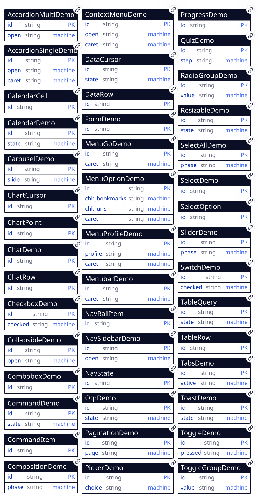
entities: AccordionMultiDemo, AccordionSingleDemo, CalendarCell, CalendarDemo, CarouselDemo, ChartCursor, ChartPoint, ChatDemo, ChatRow, CheckboxDemo, CollapsibleDemo, ComboboxDemo, CommandDemo, CommandItem, CompositionDemo, ContextMenuDemo, DataCursor, DataRow, FormDemo, MenuGoDemo, MenuOptionDemo, MenuProfileDemo, MenubarDemo, NavRailItem, NavSidebarDemo, NavState, OtpDemo, PaginationDemo, PickerDemo, ProgressDemo, QuizDemo, RadioGroupDemo, ResizableDemo, SelectAllDemo, SelectDemo, SelectOption, SliderDemo, SwitchDemo, TableQuery, TableRow, TabsDemo, ToastDemo, ToggleDemo, ToggleGroupDemo
Reads: nothing. The catalog is prose and links — the one screen in the app with no region, which is itself a statement: browsing the roster costs no store at all.
Mutations: none. Each entry links its demo screen; entries without one yet say so honestly (next, specified, later) rather than rendering a control that does nothing.
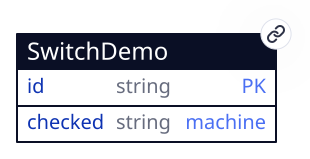
Reads: SwitchDemo, twice —
the control (a singleton region that is the component's own button, filter
id=eq.the, no data-empty-row: the machine
synthesizes the fallback) and the row readout (same filter, with an empty row
because it shows the whole row, vetted at generate to agree with the
machine's initial).
Mutations: the machine's own — a click writes the
target state into checked as a stated row through the terminal's
step machinery. No form, no handler module: the route's handler list is empty
and stays that way (test-zero-js).
Reads: TabsDemo, twice — the component's root (a singleton region whose fallback the machine synthesizes from its context) and the row readout beside it.
Mutations: the machine's own. Each trigger's
transition is the component-generated click@trigger-<name>
spelling; its literal assigns move active and every
sel_* column as one stated row. Panels project off the root's
data-state, Radix's own contract.
Reads: PickerDemo, twice — the component's root (a singleton region whose fallback the machine synthesizes from its context) and the row readout beside it.
Mutations: the machine's own. Each option's
transition is the component-generated click@trigger-<name>
spelling; its literal assigns move choice, the trigger's
label and every sel_* column as one stated row. The
listbox is a popover the trigger and every option
commandfor — light dismiss, top layer and the invoker's expanded
state are the browser's, zero script (decision-10).
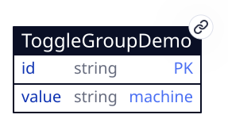
Reads: ToggleGroupDemo, three times — the component's root (a singleton region whose fallback the machine synthesizes from its context), the alignment sample beside it, and the row readout. The sample is a region of its own precisely because the component projects nothing: what tabs builds in, this screen does beside it.
Mutations: the machine's own. Each option's
transition is the component-generated
click@tg-<key>-item-<name> spelling; its literal
assigns move value and every chk_* column as one
stated row. No transition targets its own state, so a click on the checked
option finds no candidate and writes nothing
(decision-11).
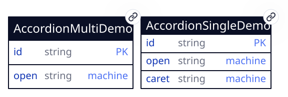
Reads:
AccordionSingleDemo twice — the single
arm's one region (filter id=eq.the, no
data-empty-row: the machine synthesizes the fallback) and its row
readout — and AccordionMultiDemo six times:
three machine regions pinning id=eq.<item>, and three
readouts beside them. The readout pane's shape is the component's, region for
region.
Mutations: the machines' own, at both arities. The
single arm writes open and every exp_ column as one
stated row, its self-arrow targeting none; each multiple-arm
machine writes only its own row's open. Every arrow is narrowed
to click@acc-<key>-trigger-<item>, the multiple arm's
included (decision-13). No form, no handler module.
Reads: nothing, and here that is the subject rather
than an incidental. Dialog and tooltip hold no state the browser does not
already hold, so the screen declares no entity, mounts no region and carries
no data-machine — the tier-0 claim as a counted absence
(decision-14).
Mutations: none. Every affordance on the screen —
two triggers, two dismiss buttons, the tip — moves the platform's own openness
through commandfor/command and writes nothing at all.
No form, no handler module, and a dialog's returnValue reaches no
row, so an outcome would need the next rung
(test-overlays-stateless).
Reads: nothing. Badge, card and alert hold no state, so this screen mounts no region and no machine — and the absence is asserted, not merely unmentioned: the two standard panes become the checked claim (test-primitives-stateless) and the variant→token map printed as data, because for a component whose whole content is presentation that map is what the machine JSON is elsewhere (decision-15).
Mutations: none. The one control on the screen is
a link into the switch demo — a gallery entry that renders a button doing
nothing fails the catalog's own rule. The three alert specimens ship the three
live-region answers side by side: no role for the callout already on the
screen, role="status" for the change that
can wait, role="alert" for the one that cannot.
Reads: ComboboxDemo, twice
— the control's region and the row readout beside it. Both carry a
data-empty-row: with no machine on the screen there is nothing to
synthesize a fallback from (decision-07).
Mutations: one form, and no machine. A
<datalist> filters natively as the reader types, and a form
holding no button submits on change, so the pick upserts the row
with zero script (pick-framework,
decision-16). The pattern generated
from the option list is the gate: change also fires on blur after
partial typing, and an ungated form would write a half-typed value.
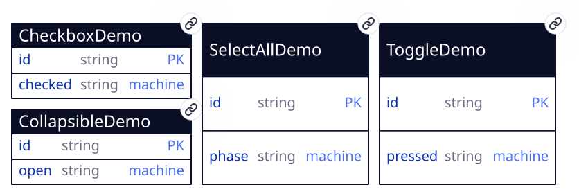
Reads: CheckboxDemo four
times — two machine regions pinning id=eq.terms and
id=eq.all, and a readout beside each —
ToggleDemo twice and
CollapsibleDemo twice, on the same shape. No
machine region carries a data-empty-row: each fallback is the
machine's initial plus its context, over the
filter's pinned id (decision-07).
Mutations: the machines' own, and each is one
narrowed arrow per state. The three two-state charts are one chart under
three attributes — aria-checked, aria-pressed,
aria-expanded — and the tri-state arm adds the third state
aria-checked speaks, whose arrows carry the three
inc_ columns as literal assigns. No arrow targets
mixed (decision-18). No form, no
handler module.
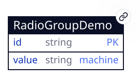
Reads: RadioGroupDemo,
twice — the component's root (a singleton region whose fallback the machine
synthesizes from its context) and the row readout. There is no third region
because there is nothing to project: the per-option fact is per-option, and
aria-checked carries it.
Mutations: the machine's own, and it is the
segmented control's machine (decision-19). Each
option's transition is the generated
click@rg-<key>-item-<name> spelling; its literal
assigns move value and every chk_* column as one
stated row. No transition targets its own state, and none names a
description's id, so clicking the chosen plan or any description line writes
nothing.
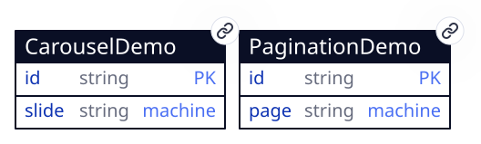
Reads: PaginationDemo
twice — the page list (filter id=eq.the, no
data-empty-row: the machine synthesizes the fallback from its
context) and the readout beside it — and
CarouselDemo twice, the same pair. Two traversals,
two collections, two rows: walking one moves nothing on the other.
Mutations: the machines' own, and the two charts
are one generator's output. Each state carries an arrow to every other
position under that position's id, plus the arrow the step lands on under
click@<prefix>-<key>-prev or -next — so
Next is an absolute arrow the generator drew, not an increment the interpreter
performs. At the ends the step's key is absent from the state altogether, and
the button carries disabled bound from a column the same arrow
assigns (decision-20). No form, no handler
module.
Reads: ToastDemo, twice — the
component's region and the row readout beside it. The region carries no
data-empty-row: the machine is the writer of the initial fact
(decision-07), and the readout's fuller row agrees
with it by generate-time check.
Mutations: one machine, four arrows, and the
fourth belongs to no click. open declares
after: {"3000": "closed"}; entering the state arms that wait,
leaving it cancels the wait, and the terminal performs it — so the delay is
data in the chart rather than a setTimeout in a handler
(decision-21). The trigger's arrow out of
open targets open, and re-entry re-arms.
closed declares no wait, which is what leaves the screen at rest
between clicks (test-toast-at-rest).
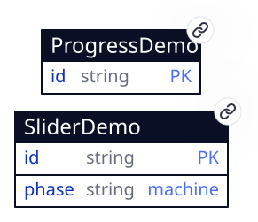
Reads: SliderDemo three times
— the control's region, the bar beside it and the row readout — and
ProgressDemo twice, for the second bar and its own
readout. Only the control's region carries a machine, and it carries no
data-empty-row: the machine is the writer of the initial fact
(decision-07), and the regions that do carry one are
handed that same synthesized row rather than a second copy of it.
Mutations: one machine, one state, one arrow, and
the arrow names no target. It assigns volume from
{"type": "event", "params": {"field": "valueAsNumber"}} — the
terminal's own leaf, off a four-member allowlist — and acts without
moving, so every write states the same phase and a different
number (decision-23). The arrow is narrowed to the
range input's id, because a control carrying no such field declines the
transition rather than writing NaN, and an arrow narrowed nowhere
would be offered to controls that have nothing to say.
ProgressDemo is written by nothing at all.
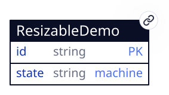
Reads: ResizableDemo once.
One region, no nesting, no projection — the whole screen is one row and the
stylesheet reading one of its columns. No data-empty-row: the
machine is the writer of the initial fact, so the panes have a width on the
first paint (decision-07).
Mutations: one machine, one collection, no forms.
The arrow is input@rs-handle and it is TARGETLESS — it acts and
stays, which is how a single state records a continuously changing value
(decision-23) — assigning split from the
event leaf's valueAsNumber. Nothing on this screen is submitted,
because a range reports every step it passes through and a commit would be a
second opinion about when the reader is finished.
--split and both panes read it, so the divider's position and the
control's value are the same fact rather than two that agree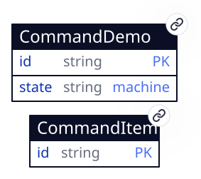
Reads: CommandDemo once, the
machine region the whole screen hangs off, and
CommandItem twice — the listbox, and a hidden
limit=1 region whose only job is to stamp the move forms the arrow
keys reach while the caret is empty. Both read the same rows under the same
filter, so the head of the visible list and the head the first arrow lands on
cannot disagree. Neither carries a
data-empty-row: both collections are seeded, so the first read
answers rows and there is no world to fall back to
(decision-07).
Mutations: one machine, two collections, and three
forms. The machine is one state and one TARGETLESS arrow whose assign reads the
event — {"type": "event", "params": {"field": "value"}} — so every
keystroke states the query and the machine stays where it is
(decision-24). That same arrow clears
active with a literal, because a caret cannot outlive the read it
was standing in. The forms are the reader's: a move form per option stating the
neighbour the projection named, a pick form per option stating both columns, and
the field's own form, which Enter submits natively and which carries
chosen bound to {active}. Nothing writes
command_item at all — the terminal wrote those rows from the
entity's seed: when it first opened the collection
(decision-25).
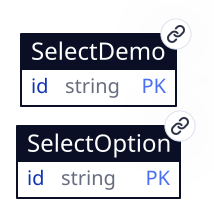
Reads: SelectDemo once, the
row readout beside the control, carrying a data-empty-row because
no machine on this screen can synthesize one
(decision-07); and
SelectOption twice — the
<optgroup> that IS a region inside the select, and the list
of the same rows below it. The control spans two collections, which is what
the screen is about. Both SelectOption regions are
top-level lists over a collection nothing seeds, so empty is the
state the screen opens in and holds until the first mint — declared, and
drawn as its own frame.
Mutations: two forms and no machine. The pick form
holds no <button>, so a pick fires change and
change submits it (select-pick); the
minting form holds one, because an option is typed rather than picked
(select-mint). The prompt option is
disabled, so the pick form has nothing to refuse and the screen's
validation-error state belongs to the minting form's generated
pattern alone (decision-26).
<optgroup> and the row list below it are both regions over select_option, which nothing seeds, so the screen opens here and the second group holds only its label; the readout stands on its data-empty-row, and the authored group is the half that does not need a rowReads: nothing, for
decision-14's reason — a sheet is that screen's
dialog given an edge, and openness is still the platform's. What this screen
adds is the factoring and the contract: #Sheet fixes
edge, #Drawer fixes it to bottom,
#AlertDialog fixes ask, and nothing else separates
them (decision-31).
Mutations: none. Both of the alert dialog's answers
close the surface through command="close" and write nothing, so
the question is asked correctly and recorded nowhere — an outcome becomes a row
through a machine arrow or a form submit, and this screen ships neither. Here
that absence is a choice rather than a wall: an arrow narrowed to the answer's
id is spellable today (test-sheet-stateless).
Reads: FormDemo three times over
one row. Twice as a singleton — the form that edits it, and the readout beside
it — each carrying a data-empty-row, because no machine on this
screen can synthesize one (decision-07). Once as a
LIST, which is where the delete lives: a list region draws nothing until its
first row exists, so the affordance and the row it acts on arrive together and a
delete of a row nothing wrote is unreachable rather than refused. That list is
also what writes empty, which is therefore where the screen opens
and what it returns to when the row is taken away.
Mutations: two forms and no machine, and the shell's
validation contract is what the screen exists to state
(decision-32). The editing form carries the one gate —
the handle's generated pattern — because the shell reveals the
FIRST .invalid in a form and one message per form is the whole
vocabulary (form-save). The delete realizes no flow: a
row-scoped delete names none, and taking the row away is the same gesture read
backwards. Three states beyond the pair, and every one of them the shell's own:
validation-error where a refused submit lands,
success for the 600ms an accepted one flashes, and
empty for the row that does not exist yet.
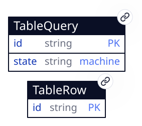
Reads: TableRow once — the
<tbody>, a region nested inside the frame's item whose filter
interpolates the enclosing row's query — and
TableQuery three times: the field the machine writes,
the frame the table is rendered inside, and the readout beside it. The frame is
a LIST of the one pinned row rather than a slot, because a nested region is
hydrated only inside an item template; only the readout carries a
data-empty-row, the machine region synthesizing its own from the
filter (decision-07) and the frame wanting none,
since the row it waits for arrives on the chart's first beat.
Mutations: one machine and one form. The machine's
first arrow is after: {"0": "typing"}, the terminal's clock
stating the query row on arrival so the table stands before anyone types; its
second is targetless and reads the event —
{"type": "event", "params": {"field": "value"}} — so every
keystroke states the query and the chart stays where it is
(decision-24). The form is how the rows exist at all:
nothing seeds table_row, so a reader mints them
(decision-33). Nothing on the screen writes
table_row but that form, and nothing sorts anything.
<tr> is its item; the filter is the enclosing row's column interpolated into the region's predicate, and the column heads are text because a sort has no wire to the read:invalid selects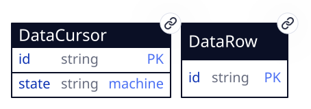
Reads: DataRow twice — the
<tbody>, which is the grid and carries the projection; and a
hidden limit=1 list over the same read, which owns the two form ids
an empty cursor resolves to. Nothing else, because the row's own gestures
ride inside its <tr>. And DataCursor
three times: the field the machine writes, the frame the grid is rendered
inside, and the readout beside it. The frame is a LIST over the one pinned row
rather than a slot, because a nested region is hydrated only inside an item
template. No region here needs a synthesized fallback for the row to exist,
since the row is seeded and a read prepares its collection before it answers —
so the readout's data-empty-row is a guard nothing can trip, kept
because it is emitted from the same CUE value as the seed and could not state a
different world (decision-35).
Mutations: one machine and two forms, and the two
forms are one flow. The machine's only arrow is targetless and writes two
columns — the query from the event's own value
(decision-24), and the cursor to the empty string,
because a row the filter removed is not rendered and nothing on the screen can
name it. The forms both state cursor on the same row: one is the
button in a row's own header, the other is the pair of buttonless forms
data-key submits on ArrowDown and ArrowUp
(dt-choose). Nothing on this screen writes
data_row at all.
aria-selected="true" because the projection compared its id against the cursor row's one column, and the same column is what data-key interpolates to find the form an arrow key submitsReads: nothing. Openness, the top layer, a press
outside, Escape, the stack that closes the previous surface and the invoker's
aria-expanded all arrive with two attributes, so this screen
declares no entity, mounts no region and carries no data-machine
— the same counted absence /overlays states, at the
tier below it (decision-37).
Mutations: none. Seven triggers and one dismiss move
the platform's own openness through commandfor/command
and write nothing at all. No form, no handler module, and no outcome to record —
a popover that closes says nothing about why
(test-popover-stateless).
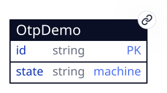
Reads: OtpDemo twice — the
control's own region (filter id=eq.the, no
data-empty-row: the machine synthesizes the fallback) and the row
readout beside it. No second collection: the code is one value on one row, and
the six boxes a reader sees are a background under one field rather than six
regions.
Mutations: the machine's own, and three arrows on
one event. Each writes code off the event's value
and states the other two columns as literals; which of the three fires is the
first guard to pass, and the third has none. Two clicks besides — the verify
and the reset — and no form, because nothing here is a row a reader mints
(decision-44).
Reads: nothing, and here that is the subject rather than an incidental. What opens the surface is the terminal and what closes it is the element, so no row decides openness and there is none to read — the third screen in this app that declares no entity, after overlays and primitives.
Mutations: none. No form, no chart, no module, and not one call to the store on the whole visit — which is the licence rather than a gap: openness nobody stores cannot disagree with anything (decision-45).
Reads: ChartCursor twice —
the figure's own region (filter id=eq.the) and the caret readout
beside the plot — and ChartPoint twice: the plot,
ordered pos.asc and projecting the caret and the four ends, and
the readout under it, a slot filtered id=eq.{active} whose row is
the point the caret names.
Mutations: the caret's column, through the two forms chart-caret declares. No chart and no module: which bar is current is a row, and what draws the bars is a stylesheet (decision-46).
Reads: nothing. The tier below a machine, below a row and below a projection, so there is no entity to name and no region to mount — the fourth screen in this app to declare none, after overlays, primitives and hover-card.
Mutations: none, and no module either. What each definition adds over the fact something else already holds is markup and a stylesheet (decision-48).
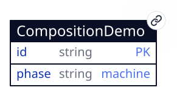
Reads: CompositionDemo
twice — the live pair's own region (filter id=eq.the, no
data-empty-row: the machine synthesizes the fallback) and the row
readout beside it. The item, field and direction specimens read nothing, which
is what they are.
Mutations: the machine's own, over one state. What is typed is assigned off the event, the clear button assigns the empty string, and each of the group's three actions states its own literal — so the controls inside these arrangements act, which is what keeps the screen from teaching a dead one (decision-49).
Reads: ChatDemo once — the
composer's row, which is what the transcript is nested in — and
ChatRow twice: the transcript itself, ordered
at.desc so the newest row is the first child of a
column-reverse box, and the row readout under the panes.
Mutations: one create, through chat-say. No chart at all — the states on this screen belong to an upload rather than to a machine, and the seed states them (decision-50).
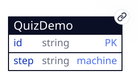
Reads: QuizDemo twice — the
questionnaire's own region (filter id=eq.the, no
data-empty-row: the machine synthesizes the fallback) and the row
readout beside it.
Mutations: the machine's own, over four states. An option's click states the answer, its own option's attribute and the block it lifts; Next and Back state the DESTINATION's block, read off the row by a leaf; Skip states an answer of its own. No form, and no guard anywhere (decision-51).
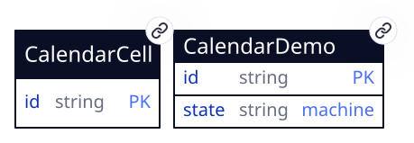
Reads: CalendarDemo six
times — the header the machine writes and the frame the grid is rendered inside,
twice over for the two instances, plus the date picker's trigger readout and the
row readout the screen prints — and CalendarCell
nineteen: nine per calendar (six week rows, two hidden lanes carrying the arrow
keys' forms, and the slot the chosen date is read off) and one more inside the
picker's readout. The header is a SLOT and the frame a
LIST of the same one row, because a nested region hydrates only inside an item
template (decision-33) and the grid is nine of them.
Neither carries a data-empty-row and nothing states the row on
arrival: it is seeded, and what the seed writes is the machine's own initial
world (decision-39). Every nested filter interpolates the
enclosing row — grid=eq.{month} for the cells,
id=eq.{value} for the chosen one — so a month step and a pick are
both re-reads.
Mutations: one machine per instance and two forms
per instance, and between them they write one collection. The machine draws two
arrows out of one state, both targetless, and each writes three columns — every
one of them the same Jessie leaf under different params
(decision-38). One state is a chart that branches on
nothing, which is decision-23's admission, and the
entity prints it as a one-member enum. The forms write the one column a pick
or an arrow key moves, value, and neither of them — nor anything
else on the screen — writes calendar_cell, whose rows are the
program's (decision-39).
aria-selected, the outside-month dimming and each cell's aria-colindex are three projected answers over the rows the week region already holds; the month above them is the one number a chart could not computeEvery one of them is decision-34 in practice: a
chart names a leaf where it cannot compute the value it needs, and nowhere
else. What survives unqualified is the part that mattered: no screen carries
a data-on-* binding or a <script>, so no DOM
event is ever handed to app code, and a module reachable any other way is
refused.
Typeahead's whole decision, as one boolean per item: the chart draws an arrow to every destination and asks each in turn, so the item the prefix reaches is the one that answers and the inventory stays in the chart rather than in a module that would pick one.
Its params carry two facts about the arrow. label is what the
module matches; keys is the keystrokes that REACH it — the shortest
prefix of that label no earlier item's label carries, since first-guard-wins
gives a shared one to the earlier arrow. One character for most of them, two
where two labels start alike, and a walk can guess neither: an event satisfying
a guard over accumulated text is not derivable from a module's name, and the
letter that disambiguates belongs to no arrow of its own. keys is
the plural of the event field key — one keystroke per character,
delivered in order — which is what lets a chart-derived walk drive an arrow no
single event can select.
A single character is typing; Tab, Escape, Enter, Home, End and the arrows are all longer, and every one of them is somewhere else's arrow. It guards the arrow that extends the buffer without moving the caret — a reader mid-word whose letters name nothing yet — and that arrow targets its own state, which is what re-arms the timer on every keystroke rather than only the first.
An assign holds a literal or a leaf, and buffer plus key is neither a literal nor anything the chart can spell, so the arrow stays in the chart and the string it writes comes from here. It is the fold seat's shape in one line: the previous value and the event, and nothing else in scope.
The timer that clears the buffer arms on every state entry, so without this it would write an empty buffer over an empty one once a second per move — and a write that changes nothing still wakes the store and re-renders everything reading the row. The timer is TARGETLESS for a second reason: one whose transition re-enters the state it fired in re-arms itself, and the screen never settles.
A #Machine's guard is a module or nothing: the transition
grammar has no literal comparison, and every arrow that moves a roving tabstop
differs from its siblings only in the key that selects it. So one module reads
event.key against a key carried as a param, and serves every arrow
#OneOf draws for every group on the page.
It reads the EVENT and never a row, which is the leaf rule (decision-34) holding: a transition stays decidable from the row and the event, and the chart stays the whole inventory of what can happen. The params are literals, which is what lets the chart-derived walk synthesize the very event each arrow answers to instead of guessing at a keyboard.
A length and a character class, neither of which a transition grammar has:
there is no comparison in it, and a chart that could state one would be a chart
with an expression language in it. So the predicate is a leaf and the number is
its param — the same number the control's maxlength, the column's
constraint and the stylesheet's track count are emitted from, so the boxes a
reader sees and the length that admits them cannot drift
(decision-44).
The arrow it guards is the one a reader is on for five keystrokes out of six, and the arrow BELOW it is the one that calls a keystroke wrong. Having both is the claim: a code half typed is not an invalid code, and only a character that can never be part of one is.
The exact negation of the one above, and having both is the claim: the two partition every string between them, so the three arrows on one event are exhaustive without a candidate that catches whatever the others declined. That candidate is also the one arrow nothing could drive — an event with no value stated is the control holding whatever it last held, which is a stimulus a walk cannot name (decision-44).
A machine's assign holds a literal or a leaf, and "the opposite of what is
there" is neither: the chart is closed over the row and can read it, but it has
no expression to write with. One leaf serves the header's three-valued cycle
and an item's plain flip, because an item is never
mixed — and a partially checked select-all checking everything is
the same sentence as "mixed is not false", which is APG's own rule
(decision-47).
The value no FIELD can hold: a field is what a machine decides, and this follows from the row. It is assigned in the same write as the item that caused it, so the header and its items are never seen disagreeing, and the items are found by their shared prefix rather than listed — the component owns both, so a list here would be one set written twice.
A machine's assign holds a literal or a leaf, and "is there an answer" is neither: the chart is closed over the row and can read it, and has no expression to write with. This one reads the row and never the event, which is what a step arrow means — the destination's answer is what decides whether a reader is asked a question they have already answered (decision-51).
The freeform step's, and the pair exists because the two sources are two
facts. The row still holds the answer before this keystroke, so a leaf reading
it there would block a step a reader has just answered and free one they have
just emptied — a keystroke behind, always. And one leaf preferring the event
would break the other three arrows: EVERY click carries a value,
a button's own, which is the empty string, so a step arrow would read as an
unanswered question.
Called with the reduce's signature over the calendar row alone, in a
compartment endowed with nothing: no clock, no DOM, no second row. Given
params.by it steps the row's month, clamps the result into
[params.min, params.max], and returns one of three things by
params.emit — the stepped month's key, that month's name, or the
same grid position inside it. One module serves both arrows and both instances
because the differences are all params, which is what params are for
(decision-38).
It computes a VALUE and never decides one. The clamp is not a branch the
chart declined to draw: it is the same answer an end gives in the ARIA
projection, where next and prev at the ends of a list
name the row itself.
Six, over five screens, and every one of them a COMMIT: a form writes the
row a gesture decides, where a machine writes screen state as it changes. That
is the whole line between them — a machine can carry typed text
(decision-24), so what sends these to a form is
the gesture and not the value. The combobox commits a pick out of five literals
(decision-17); the select commits a pick and mints
the option rows the pick chooses from (decision-26);
the form commits an edit of the row it is a view of, through the validation
contract all of them were already keeping
(decision-32); the table mints the rows it
renders, because nothing seeds table_row
(decision-33); and the data table records which row
is chosen, by pointer and by arrow key, which is one flow realized by two form
declarations (decision-35).
The calendar's four forms are outside this list. A pick and a month step both write the one column that says which cell the grid is standing on, so what they realize is a move through a grid rather than a commit, and neither declares a flow (decision-38). Every mutation the app makes is one of these six flows, one of those four forms, or a machine transition — a terminal-performed write that no form describes.
The reader types, the UA filters the <datalist>, and
picking a suggestion fires change on a form that holds no button,
which submits it. The row is addressed by the hidden id the form
carries, so the first pick inserts and every later one updates. No handler
module and no machine take part.
The reader opens a native <select>, picks an option from
either group, and change submits the form the select sits in — no
button, no hidden mirror of the value, because the select's own
name is the field. The row is addressed by the hidden
id, so the first pick inserts and every later one updates. On
success the form resets, which returns the control to its prompt while the row
holds the choice (decision-26).
The option's value is typed rather than picked, so this form carries a
button. What the reader types is the pk, gated by the pattern
generated from the same sentence as the column's constraint; the write lands in
the collection the select's second <optgroup> reads, so the
new option appears in the control with nothing else taking part. Upsert rather
than create: typing a name the collection already holds restates that row
instead of refusing.
The reader types and presses Save, and everything between that press and the
row is the shell's: noValidate is already set, so the UA's bubble
never appears; checkValidity() is the gate, and a form failing it
reaches no store, states no row, takes validation-error and reveals
its first .invalid until the next keystroke. An accepted write
resets the form and flashes success for 600ms — which lands on the
row rather than on blank, because both controls bind their DEFAULT value
(decision-32). The row is addressed by the hidden
id the form carries, so the first save inserts and every later one
updates. The delete beside it declares no flow of its own: a row-scoped delete
names none.
A table's rows are its content, and nothing seeds table_row, so
this form is how any row exists (decision-33). Its
controls are the table's own columns, emitted from the one declaration that
also writes the header row and the row template, so a column can never reach
one of the three and not the others. The pk is typed, so the form carries a
button; upsert rather than create, because typing an invoice number the table
already holds restates that row instead of refusing. On success the form
resets, and the row it wrote is a <tr> the region renders
one beat later.
Moving the caret, read two ways, and both write the same one column. The
pointer's way is the bar itself: it is a submit button in a form carrying its
own point's id, so a click and a key cannot come to mean two different things.
The keyboard's way is four buttonless forms each point carries, whose hidden
input holds the neighbour or the end the projection named —
{nxt}, {prv}, {fst},
{lst} — and which data-key submits on Down, Up, Home
and End. One flow, two form declarations: what differs is the gesture
(decision-46).
A message a reader sends, and it states EVERY column: a row half stated is
one the bindings read as blank, so the seat, the kind, the two names and the
state ride as hidden literals the composer knows. at is the
terminal's clock — the one value here neither the program nor the reader
supplies — and it is what the transcript orders by
(decision-50).
Choosing a row, read two ways. The pointer's way is a submit button in the
row's own header, carrying the row's id in a hidden input; the keyboard's way is
a pair of buttonless forms the same row carries, whose hidden input holds the
NEIGHBOUR the projection named — {nxt} or {prv} — and
which data-key submits on ArrowDown and ArrowUp. Both write one
column of one row, so one flow is realized by two form declarations: what
differs is the gesture, and neither carries a visible control that could be
refused. A third pair, owned by a limit=1 list over the same read,
answers the ids an empty cursor interpolates to and writes the first row of
whatever the filter left (decision-35).
Asking for an order. Every order the grid can be read in is a key of the map
in data-order, and this flow writes one of those keys onto the
cursor row; the region re-reads because its read moved, exactly as it re-reads
when the filter does. The clause itself never travels — a row holding
amount.desc would be a row naming a COLUMN, and the orders a screen
has would stop being enumerable (decision-38).
One form declaration, realized once per order: each states the key AND every
aria-sort column at once, in literals, so no two headers can claim
the order at the same time. Two commands per column rather than one toggle,
which is shadcn's own header menu — a toggle would have to know which order it
is already in and answer differently, and that is a conditional no binding
states. Pressing the same command twice states the same row, which is what a
command that is not a toggle does.
Each arrangement keeps the one relationship it is:
output.hrefless == 0 && output.fieldDefinitions == 1
&& output.checkedActions == 0 — no link without a destination,
one Field definition in the catalog rather than two, and no
aria-checked on a group of actions.
Direction is an attribute: output.physicalEdges == 0
&& output.rtlFrames == 1 — every edge the screen's stylesheet
states is logical, so the frame mirrors with no second rule
(decision-49).
One region over three kinds, and the kind is a column:
output.rows == 6 && output.bubbles == 4 &&
output.markers == 1 && output.regions == 1 — the marker carries
no bubble, no avatar and no seat, because it is a row nobody said.
The composer adds a row and nothing measures anything:
output.rows == 7 && output.stated == 9 &&
output.listeners == 0 — every column stated by the create, and the live
edge left to the layout (decision-50).
The steps are the chart's states and the answers are columns:
output.step == ["one", "two", "one", "two"] &&
output.blocked == "" && output.rows == 1 — Next leaves only an
answered step, and coming Back and forward again does not ask a question
already answered.
Skip is the arrow with no block on it, and it states an answer of its own:
output.step == "three" && output.answer ==
"Skipped" — so nothing downstream has to tell a skipped question from an
unanswered one.
The index links every route the program declares and every link is a route:
output.unlinked == 0 && output.dangling == 0 &&
output.controls == 0 — a screen nothing names is one nothing reaches,
and both directions are invisible to every other test here, since each of those
mounts the screen it is about by name.
Each of the four is a skin over a fact something else holds, and the screen
prints which: output.regions == 0 &&
output.machines == 0 && output.literalColours == 0 — no region,
no chart, no module, and a stylesheet with no colour of its own.
The spinner carries its wait without its animation:
output.role == "status" && output.labelled == 3
&& output.reducedMotionRule == true — every specimen labelled,
and a rule that takes the spin away.
A bar's length is calc() over a bound value and a bound domain,
and the domain is computed where the rows are stated:
output.bars == 6 && output.domain == 305 &&
output.arithmeticInMarkup == 0.
One tab stop for the plot, and the four keys write the caret's column off the
projection's neighbours — the same column a click on a bar writes:
output.active == ["apr", "jan", "jun", "feb"] &&
output.tabStops == 1 && output.pointWrites == 0.
The picture is the data: output.rowHeaders == 6 &&
output.namedBars == 6 && output.lineText == "" — a row header per
category, a cell per value, and the line over them drawing the same rows while
stating no number of its own.
The card's own link is reachable, and the card survives the reader arriving on
it: the surface follows its trigger in document order, so Tab moves into it,
and focus landing inside cancels the close the trigger's own
focusout armed.
A card carries neither role="tooltip" nor
aria-describedby, and the tip on the overlays
screen carries both — one gesture, two surfaces, and what is inside each
decides its ARIA (decision-45).
Openness is nobody's row: output.regions == 0 &&
output.machines == 0 && output.storeCalls == 0 — the whole
visit's traffic, reads included.
A pasted code arrives as one event and lands as one write, and no slot is an
input of its own: output.inputs == 1 &&
output.writes == ["148203"] — the paste, the autofill and the caret all
stay the platform's because there is one control for them to be about.
The sixth digit completes the code, and what makes the verify button pressable
is the column that same arrow wrote: output.state ==
["complete", "verified"] && output.blocked == "" — the click's
arrow carries no guard, because the fact is already in the row.
A keystroke that can never be part of a code is written and marked rather than
swallowed, and a code half typed is marked neither:
output.invalid == ["true", "false"] && output.code ==
["148x", "1482"].
Every entity is tab: a gallery's state is the visit's, so nothing here emits a table, a policy, a publication or a pipeline; the durability ladder is demonstrated by the rows dying with the tab, not documented.
Behavior is data, not code: each stateful component carries a #Machine — the XState-JSON subset whose one action is writing the target state into the row's field — executed by the terminal through the same path as a Jessie reduce, so replay, tempo and the refusal event apply with the machine knowing nothing; a guard is the cliff where an app writes the reduce instead, and this gallery crosses it once, for a value and never for a decision (decision-34).
State names are the ARIA attribute's values: the switch's states are 'true' and 'false' because aria-checked speaks that vocabulary, so one field binds the semantics and the styling hook and no component carries two spellings of one fact.
Components are CUE definitions composed into #Screen.markup at emit; the omnishell-- tag survives in the served HTML as an inert wrapper — visible to devtools, CSS and the visual battery, registered with nothing, no customElements.define and no shadow DOM.
shadcn's theming is CSS variables, so its palette lands on the design-token contract and dark mode is each token's light-dark() twin; there is no theme-switch control because appearance is a token resolution, reviewed as the storyboard's -dark frames.
No auth block: a component gallery gates nobody, and a sign-in in front of a reference is a toll.
The machine is the writer of the initial fact: the switch region carries no data-empty-row and the terminal synthesizes its fallback row from the filter's pinned id plus the machine's initial; the row-readout pane keeps a data-empty-row because it shows a fuller row than the machine's one field, and the generate-time agreement check keeps the two declarations one fact.
The combobox is deliberately last in the catalog: its virtual-focus behavior is the one part with no declarative precedent, and it is where the widget tier died the first time.
N triggers share one
machine, so the discrimination is component-generated: #Tabs writes one
click@trigger-<name> transition per (state, trigger) pair —
a grammar the interpreter resolves and no author learns — and each
transition's literal assigns keep one aria-selected column per
trigger in step, so the ARIA contract stays plain bindings over the
row.
The picker splits its two
behaviors across the two closed vocabularies that own them: selection is a
machine — one state per option, component-generated
click@trigger arrows, literal assigns keeping the readout label
and every aria-selected in step — and openness is the platform's
popover commanded by commandfor, with anchor
positioning in CSS. Light dismiss, top layer and the invoker's expanded state
ship as two attributes and zero script. An option button carries both at
once: its id feeds the machine, its command closes the list.
The segmented control is a
radiogroup, not a bag of pressed buttons. shadcn's ToggleGroup offers both
spellings, and the single-select arm is the one a #Machine already fits: the
field holds exactly one state name, so the choice is single-valued, and every
arrow's literal assigns project that one value onto all N chk_
columns at once — which is what leaves no arrow able to check two members, or
none. That is the promise role="radiogroup" with
aria-checked makes and role="group" with
aria-pressed does not. The self-arrow is omitted as #Tabs omits
it, so there is no deselect and a click on the checked option finds no
candidate and writes nothing. The derived columns are chk_*
because the attribute is aria-checked — an ARIA column's prefix
names the attribute it binds, which is
decision-03 extended one notch for the case where N
triggers share one field and the field cannot itself be the ARIA value. The
keyboard is APG's radio group in full: the tabstop is the chosen option's, so
data-rove binds the very column aria-checked binds
and one write moves the selection, the tab order and the reader's focus
together — they cannot disagree because there is nothing to disagree with. The
arrows come with it and never without it: a tabstop with no arrows to move it
strands every unchecked option outside the tab order, which is why
#OneOf draws both under one flag rather than
letting a skin take half. Right and Down go to the next option, Left and Up to
the previous, both WRAPPING as the pattern asks — a compile-time chart can
state a wrap the read tier's lane clauses decline, because there the pattern is
not known. Home and End name the ends, and the one that names the state it
leaves draws no arrow, which is the rule the clicks already keep. Ids are
tg-<key>-item-<name>, and neither key nor option name
admits a hyphen, so the separator is unreachable from either side and two
groups on one screen cannot collide; the id sits on the button and on nothing
inside it, because from resolves to the nearest ancestor carrying
one.
A machine's arity is one
row; multiplicity is the region's. The accordion ships both of shadcn's arms
from one definition to prove it rather than assert it:
type="single" is one region over one row whose states are the
item names plus a closed none, with one exp_ column
per trigger moved by literal assigns and a self-arrow targeting
none — the tabs shape plus the arrow a tablist must not have.
type="multiple" is N sibling singleton regions on one collection,
each pinning id=eq.<item>, each carrying the switch's
two-state machine with its field renamed and its event narrowed: no context
and no derived column, because the field IS aria-expanded's
value. Nothing was added to the vocabulary for the second case, which is why
#Machine never needed a plural — the arity lives in the entity's
shape (one row of 1+N columns, or N rows of two, the item set moving from the
field's constraint to the pk's) and in how many regions the expansion writes.
And because there is no group row at arity N, only the single arm binds
data-state: which item is open is the group's own fact, and no
trigger's aria-expanded spells it. The keyboard is APG's
required contract whole and nothing past it, at both arities: Tab
walks the triggers in document order and an open panel's content after them,
and Space or Enter opens the focused header, both of them native button
behaviour. Up and Down between headers, and Home and End,
are a second chart beside the expansion's — #OneOf walking the
headers over caret and cur_*, vertical only, because
a header list gives a reader no reason to press Left or Right. It has to be a
second chart: both narrow their arrows to the same headers, and which header is
open and which one the reader stands on are two facts one field cannot hold
without becoming their product.
No tabindex ships with them, and that is the pattern's contract
rather than a deferral: APG keeps every header in the Tab sequence, so the caret
is data-focus and a roving tabstop would take two of three headers
out of a sequence the standard puts them in. Ctrl+PageUp and Ctrl+PageDown stay
absent — the walk's key set is APG's own for moving through a list, and a chord
is not in it.
Every accordion arrow is
narrowed to click@acc-<key>-trigger-<item>, the
multiple arm's included even though its region holds exactly one button:
from resolves to the nearest ancestor carrying an id and the bare
event type is the candidate list's fallback, so an unnarrowed
click would fire from the panel a reader is clicking inside and
collapse it. A bare click is safe only where the region IS the
affordance, which is true of the switch and of nothing else in this catalog.
The panel's collapse is then CSS keyed on the trigger's own
aria-expanded, not a bound hidden: a bound boolean
attribute is absent when its value interpolates empty, so binding it would
need a column holding the empty string — a second spelling of what
aria-expanded already says. One rule serves both arms, and a
fourth item costs no stylesheet.
Dialog and tooltip earn no
machine and no row. Openness, the top layer, the inert background that is also
the focus trap, Esc as a close request, the focus return and the placement are
all the platform's — commanded by commandfor, positioned by
anchor-name — so the tier-0 claim lands as a counted absence on
the screen rather than a sentence about it, and the two panes every other
screen fills with a row and a chart name who holds each state instead. Modal
and non-modal are one definition's two parameters because neither contains the
other: modal buys the inert background and loses backdrop light dismiss,
non-modal buys light dismiss and loses the inert background, and
closedby, which would close that gap, is outside this tree's
measured engine matrix, so nothing depends on it. What the tooltip ships is
APG's disclosure, not APG's tooltip: interestfor is
implemented in no engine, so a hover-opened surface cannot ship without
script, and the click-opened popover — complete, correct, zero script — ships
under the name tip carrying no role="tooltip" and no
aria-describedby rather than wearing a contract it does not meet.
The CSS-only hover surface that would wear that contract fails WCAG
2.1 SC 1.4.13's Dismissable clause by construction, because CSS has no Esc, so
the gallery prints the clause rather than rendering the failure for someone to
copy.
Badge, card and alert are one
catalog entry because they are one family — the family with no behavior — and
what they contribute is not a machine but the demonstration that shadcn's
variant vocabulary lands on the token contract with no new token name. The two
standard panes hold that instead: The row becomes the checked claim
that the screen mounts no region and no machine, and The machine
becomes The tokens, the variant→token map printed as data, because for
a component whose whole content is presentation that map is the
machine — and each row carries the selector chain it describes, so the suite
folds the screen's stylesheet through the table and refuses a cell the rules
do not set, a declaration no cell lists, or a variant on the screen with no
row. It names tokens and never values — a hex printed on the screen would
be the palette's second declaration, which is the fork
decision-05 exists to prevent. Two divergences from
shadcn are deliberate: the card title ships as a real heading, since a card
grid of divs leaves the document with no outline, and it names the
<article> it heads, a boundary a screen reader announces on
entry, rather than leaving that boundary unnamed or promising the landmark
role="region" would; and role="alert", which shadcn
hard-codes on every variant, is treated as the assertive live region it is — it interrupts, so it is correct only for
content that appears after load and is urgent. #Alert therefore
takes a live setting defaulting to none, and the gallery ships one
specimen of each of the three answers. The corollary, written beside them
because it is the one that bites: a POLITE region must be mounted before its
content changes, or the only change it reports is its own arrival and nothing
is spoken; role="alert" is the exception, announced when the
element is inserted with its text already in it. The terminal injects a screen
whole on navigation, so the assertive specimen speaks on every arrival at
/primitives — printed on the screen, because a gallery that demonstrates a
role owes the reader its cost.
The combobox ships the
filtering the platform owns and nothing past it:
<input list> plus <datalist>, which the
UA maps to role="combobox" with autocomplete="list"
and haspopup="listbox", and a form holding no button, which
submits on change — so a picked suggestion writes the row with
zero script. The UA runs the popup's lifecycle and exposes no expanded state
for it, so APG's required aria-expanded is one more thing neither
the page nor a reader can see, printed on the screen beside the pair's other
costs. The option list is stated once and emitted three times, as the
datalist, the input's
pattern and the column's CEL, so a control-side gate and a
store-side constraint that could drift are one declaration; the pattern is
load-bearing rather than decoration, because change also fires on
blur after partial typing. This screen's write is a form's rather than a
machine's, because a pick is a commit on a gesture
(decision-17).
One wall stands between that
control and shadcn's cmdk combobox, and the screen names it rather than faking
past it. Virtual focus: moving the active option is a read of the row after
this one in a foreign, live-filtered collection, which row closure forbids, and
neither the machine vocabulary nor the data attributes names an ordinal — what
decision-08's "no declarative precedent" was
pointing at, and the only thing it was pointing at. The two halves that are not
walls are the two /command runs: an assign reading the
event's value (decision-24), and a nested region
whose interpolated filter tracks the enclosing row. This screen still declines
the machine, and the reason is the column rather than the vocabulary:
ComboboxDemo's choice enumerates five
values, a per-keystroke assign would state values it does not admit, and a
chart holds no pattern to refuse them while the control holds one
and fires it on submit. A pick is a COMMIT, not screen state as it changes. So
the two screens are the two answers — literals the UA filters, against data a
column filters — and neither supersedes the other.
The switch's two-state
machine is not a switch: it is the shape of every binary control, so
checkbox, toggle and collapsible are one generator whose only parameter that
matters is the ARIA attribute the field spells — aria-checked,
aria-pressed, aria-expanded — which is
decision-03 at its conclusion, and the screen
prints the five-row table that makes the claim checkable rather than
asserting it. Its fifth row is the switch, and it carries the one difference:
the switch's region IS its affordance and carries no id, so its arrows keep
the bare click where the four generated here are narrowed to a
trigger — the suite erases the field, the trigger and that narrowing, and
holds all five to one chart. The generator takes next, a map from state to what
the trigger's click makes true next, so the key set IS the state set and a
state no value names has no incoming arrow — which is exactly what the
checkbox's third state needs: aria-checked speaks
mixed, so the tri-state arm has three states and the cycle is
APG's, a partially checked select-all checks everything and from there the
control is the two-cycle, with nothing returning to mixed,
because partial is a fact about the items and a machine is closed over its
own row. One field cannot hold that function, and the two things
that could are a machine whose states are the item subsets —
decision-11's derived-ARIA-column extension, at 2^N
states — and a cross-row read row closure forbids. Neither is paid: the
select-all is a component of its own, whose value is a column rather than a
field (decision-47), so this generator's tri-state
arm is gone and what is left here is the binary shape it always was. Every arrow is narrowed to
its trigger's id including the toggle's, whose region IS the affordance as
the switch's is, because the id costs one attribute and the narrowing then
survives a caller who wraps the button in something clickable. The
collapsible is the accordion's multiple arm with one item and is
described as exactly that — same trigger, same panel hidden by a rule keyed
on the trigger's own aria-expanded, same two-state machine —
dropping only the item set and the group wrapper. And alone in this catalog
the screen defers no keyboard at all: a checkbox, a toggle button and a
disclosure are all buttons, and Space and Enter press a button, so APG's
required contract for all three is complete with no tabindex and
no key handling; the roving-tabstop deferral belongs to the patterns that
group N affordances under one label, and none of these three
does.
The radio group and the
segmented control are one machine under two skins, and the gallery ships the
second entry by factoring rather than copying. #OneOf is the
single-select chart — one state per option, one derived ARIA column per
option, one arrow per (state, other option) pair whose literal assigns write
the whole derived set as one row, and no arrow from a state to itself —
and #ToggleGroup, #RadioGroup and
#Tabs are three markups over it, so a fourth single-select entry
costs a skin and no chart. What makes a radio group a radio group is therefore
entirely outside the machine, and it is three things, all markup: a legend
that is on the screen and names the group through
aria-labelledby, where a segmented control hides its name in an
aria-label; a description per option, carried by
aria-describedby as a sibling the button points at — nested it
would fold into the option's accessible name, since a button is named from its
content, and its own id is what makes a click on it resolve to no arrow
(decision-13's narrowing, load-bearing again); and
one option per line, because a description per option is what a compact
control has no room for. The group emits no name and no hidden
input: it is the shape a form submits, but it is in no form and the write is
the machine's one stated row, so the screen says so rather than dressing a
control as a submit that cannot happen. The keyboard is exactly the segmented
control's (decision-11), because it is the same
chart: #OneOf takes a rove flag and the skins that are
composite widgets set it, so the tabstop and the arrows arrive together or not
at all — and with them focusin, so a Tab into the group leaves the
column naming whatever the reader is standing on rather than something to
reconcile later. The tablist takes the same
flag and the same arrows, so the three composite single-select skins in this
catalog rove and none of them spells a keyboard of its own. There is no
aria-orientation, and now for the opposite reason — both axes
move the tabstop, so there is no axis to tell a reader about. The menu's
menuitemradio set is the same generator with the flag off
(decision-29): a menu's arrows cross every item, not
the radio subset, and half a keyboard there would be the failure this pattern
avoids. The sharing is a checked fact rather than a claim: the suite
canonicalizes both emitted charts by option index — guard included, since a
copied generator drifts in the key as easily as in the target — and refuses
them if they differ. That holds the two CHARTS to
one, not the two generators — a copy that drifted would fail and a verbatim
one would pass — so the factoring is what keeps there from being a second
generator, and the check is what keeps one from mattering
unnoticed.
Relative movement needs no
vocabulary. A machine has no arithmetic and none is missing, because from each
position the component draws the ABSOLUTE arrow the step lands on: from page
three, Next is the arrow to page four, filed under the step button's
id instead of that page's. Pagination and carousel are therefore one generator
over an ordered list — #Ordinal, which writes one state per
position and from each state an arrow to every other position plus the two
neighbours — and the chart stays the complete inventory of where a reader can
go, which is what makes it reviewable. #Ordinal is
#OneOf generalized: the same one-state-per-item
chart with the derived column's token parameterized and the step arrows and
their two disabled columns added, so a fifth traversal belongs on one of those
two rather than on a third copy of the loop.
The two components wrap that one machine in their own markup, and what
separates them is the ARIA contract and whether anything is projected. The
page list is a <nav> of buttons because a page here is a
column of a row and not a location, so shadcn's <a> would
be a link to nowhere wearing a link's role. The carousel projects its slide
off the root's bound data-state exactly as
#Tabs projects a panel, and its dots are APG's
slide picker rather than a tablist, because the slides are not tabpanels. That
viewport is aria-live="polite" and
aria-atomic="false", APG's required property for the element
holding the slides: pressing a dot or a step moves focus nowhere, so the
projection would otherwise swap one slide for another in silence. Two static
attributes, and nothing in the chart.
aria-current is decision-03 on a token
attribute rather than a boolean one, so the column holds the attribute's own
value — page for the page list, true for the dots —
and the entity's constraint prints that vocabulary rather than a boolean
someone translates.
The ends are the honest part. At the first position no
click@<prefix>-<key>-prev key exists at all, and the
button says the same thing through disabled bound from
dis_prev — which works because the binder REMOVES a bound boolean
attribute when it interpolates empty (screen.js
BOOL_ATTRS). The column holds disabled or the empty
string, the missing arrow and the dead button are one generator's two
emissions, and no aria-disabled is written beside it, because
that would be a second spelling of what the chart already says and two
spellings drift. The native costs are stated on the screen rather than hidden:
a disabled button leaves the tab order, and the served placeholder is a
non-empty string, so both steps are disabled until the row arrives — the right
state for a control whose machine has not mounted.
Three things shadcn ships are refused, each for a reason the chart makes.
The ellipsis: a windowed page list is only a per-state
projection and needs no new vocabulary, but hiding a button does not remove
its arrow, so the chart would go on promising a jump the reader can no longer
make. Auto-rotation: after: would express the
advance exactly, WCAG 2.2.2 then demands a pause, and turning a timer off
costs either a guard module this app does not ship or twice the states.
Swipe: a machine narrows on an event type and an element id,
while a gesture is a distance computed across several events that neither the
event nor an assign carries. The keyboard is Tab in document order, native
Space and Enter, and no roving tabindex — and unlike the three single-select
skins that now rove (decision-19), this one owes
nothing. A nav of buttons under role="group" is not a
composite widget: group makes no promise about arrow keys, APG has
no pattern for a list of buttons, and every button being its own tab stop is
the contract in full — the same reading decision-36
gives the rail's links. A roving tabstop here would take reachability away to
buy discoverability nobody asked for. The screen's arrow census is measured off the emitted charts by
#Inventory rather than written beside them, because a printed
count the generator does not produce is a count that can be
wrong.
Being in a state IS the
pending timer. after is the relocated invoke, so a
self-dismissing surface is a delay declared in the chart rather than a
setTimeout in a handler: entering the state arms the wait, leaving
it cancels the wait, and the terminal performs it — which is what puts the wait
under ?tempo= and ?clock=manual with the component
knowing about neither. A machine that could read a clock would stop being a
function of its inputs and no session of it would replay, so the deadline is
nowhere in the row and ToastDemo has no column for it.
The way back to the pending state is a target the machine already draws: the
trigger's arrow out of open targets open, a target
re-enters a state even when it is the one already held, and that re-entry is
the re-arm — nothing was added to the vocabulary to say it. And because a wait
is armed by entry, a state declaring none arms none: closed
carries no after, which is what leaves the screen at rest between
clicks. That is a property of the chart, visible as a fifth arrow the moment it
is lost, and it is the condition for a screen the visual battery can measure at
all — a machine cycling on its own never settles.
The toast is announced by its
viewport and not by itself. role="status" sits on the container
that is always mounted, because decision-15's
corollary bites hardest here: a polite region must be mounted before its
content changes, or the only change it reports is its own arrival — and a live
region that appears together with its message is exactly that failure. Polite
rather than assertive, and the timer is the argument: a message worth
interrupting for is one no reader can be asked to catch inside three seconds,
so auto-dismissal and role="alert" exclude each other by
construction. Nothing beside the role is written, since
role="status" already carries aria-live="polite" and
aria-atomic="true"; and focus never moves to the surface, which is
why the dismiss button is an ordinary tab stop rather than the only way out.
The surface takes no top layer — the one place this gallery declines a
primitive decision-14 would have taken — because a
popover's openness is the UA's, moved by a button press, while
after states a row and commands nothing: the timer would expire
with the row saying closed and the surface still open, openness
living in two places. What does not ship is named on the screen rather than
left to be found, that refusal included — the screen is where a reader meets
the z-index it costs. A queue is N rows and N regions
(decision-12's multiple arm), whose missing part is
the ordering and not the machine. Swipe needs pointer coordinates no event
carries. Esc is decision-17's first wall one notch
closer: keydown bubbles and an arrow could be drawn on it, but the
event carries no key, so that arrow would fire on every key alike. A countdown
bar would be a second, unsynchronised declaration of the delay that
?tempo= would pull apart. And WCAG 2.2.1's adjustable time limit
is unmet: the delay is the component's parameter, authorable and not
reader-adjustable, and the seam that would close it — an after key
naming a Jessie module that returns milliseconds — is one this app declines,
because zero JavaScript is its own promise. And the wait does not pause while
the toast has focus, so the dismiss button can be hidden out from under a
reader standing on it and focus falls back to the document: a
held state declaring no after, entered on
focusin and left on focusout, is drawable, since
both bubble to the region — what the chart could not say is the resume,
because leaving would arm a whole delay again rather than the remainder of the
one it paused.
A value has no states, so it
cannot be the machine's field: initial names one of
states' keys and that set is finite and closed, which puts a
continuous position in a SECOND column the same transition assigns — the
terminal's own event leaf,
{"type": "event", "params": {"field": "valueAsNumber"}}, whose
field comes from a four-member allowlist and which DECLINES rather than writing
NaN when the control that fired carries no such field. So every
arrow reading it is narrowed to its control's id
(decision-13), or it would be offered to controls
that have nothing to say. What is left of the chart once the value has moved
out of the field is one state and one targetless transition, and the judgement
this screen exists to make is that such a chart is not a machine. A
statechart's content is its branching — the claim that from HERE this
event goes THERE and from elsewhere it does not — and a chart with one
state makes no claim of that kind. What remains is three facts that were never
the chart's: an event key narrowed to one id, a column the transition writes,
and the leaf that reads the event. Together they are a BINDING, the terminal's
write path with an allowlisted read attached, while field,
initial and states are the ceremony the vocabulary
charges for reaching it — and the entity prints that admission rather
than hiding it, since phase's cel is a one-member enum and a
column whose whole value set is one member carries no information. The honest
spelling for a value-carrying control therefore names the column, the event and
the field it reads, and invents no state to be in; this app declines to ship
it, because a second write vocabulary standing beside the machine, for the case
that is one arrow long, buys less than it costs, and the one-state chart is the
degenerate case of the general thing. The first branch a slider grows —
an arm that is disabled, dragging distinguished from committed, a threshold
past which the number means something else — brings the states back doing
real work with the column, the arrow and the leaf all unrespelled. The constant
column is the price of ONE write path rather than two, and that trade is what
this decision takes rather than a defect it reports.
#Progress is the same boundary from the other side and holds
nothing at all: no machine, no affordance, one bound column painted as a bar.
Pointing its region at the slider's row is what makes one row drive two
components — a value the reader sets and a value the reader reads —
and pointing a second instance at a row nothing on the screen writes is not a
broken specimen but the shape of every real progress bar, whose value belongs
to whatever is making the progress. Not one aria-* attribute is
written on the screen, because the platform has an element for each half:
<input type="range"> is a slider to every AT and
<progress> is a progressbar, each supplying its role and its
value off its own attributes, and both are labelable, so a
<label for> a reader can see is the accessible name. Both are
dressed rather than rebuilt — one accent-color paints the
thumb, the rail's fill and both bars, every one of them a shadow tree no
selector on the page can reach — so the exact shape of a thumb and a bar
is the engine's and differs a little between them, which is the price of the
sentence before it and the trade shadcn declines when it rebuilds both as div
towers over Radix. The roving-tabstop deferral the rest of the
catalog carries does not reach this screen, because it belongs to patterns
grouping N affordances under one label and a single-thumb range is one
affordance; two thumbs would be two, and that case takes what the
single-select skins now take: data-rove over the column saying
which thumb is current
(plugins/pronto/docs/2026-09-03-the-reader-is-also-a-writer.md). Four things
shadcn ships are refused, with the reason each, and one thing the binding
itself cannot do is named beside them. Two thumbs, because the custom
rail means rebuilding the native control's whole contract by hand, and two
native ranges instead need the low thumb held under the high one, a comparison
between two columns that an assign cannot carry — a guard would decide
it, and decision-02's cliff is exactly there. Any
arithmetic on the value, the same wall stated generally, since the column holds
the number the control produced and no clamp, no snap to an uneven scale, no
taper and no percentage of anything the row does not carry. Committing on
release, which is one key in the chart — change for
input — and is declined because every intermediate write is
what there is to watch. And a row that can move the control:
the binding is the value CONTENT attribute, and an
<input type="range"> is in value mode, so the reader's first
interaction sets the dirty value flag and the thumb stops tracking what the
binder writes. A row paints a bar forever and moves a slider only until it is
first touched. Nothing on this screen turns on it — the control is the
only writer of its row — but a consumer that adds a second writer cannot
roll a refused write back where the reader can see it, which is the guarantee
data-value gives a checkbox and this does not have. And an
indeterminate bar, because a
<progress> is indeterminate when it carries no
value attribute at all, while a bound attribute is
present-or-empty rather than present-or-absent — the binder removes only
boolean and URL attributes when a binding comes out empty, and an empty one
paints a bar at zero that no reader can tell from a real zero — so
indeterminacy is not a value a column can state, but different markup.
Typed text is a column.
{"type": "event", "params": {"field": "value"}} is the one leaf a
machine states instead of importing, and it reads the EVENT rather than another
row — so a transition stays decidable from the row and the event that fired it,
and the chart stays the whole inventory of what can happen, which is the
property a leaf reaching into the DOM would have cost. The field it may name is
a closed list — value, checked,
valueAsNumber, key — because a leaf naming any
property would be a handle on the element; and a control carrying no such field
declines the transition rather than writing false or
NaN and calling it the reader's answer.
The arrow is TARGETLESS, so the machine acts and stays and one state records
a continuously changing value — which is why
CommandDemo has exactly one state and no second
thing to be in. The other half is the nested region, whose
data-filter interpolates the enclosing item's column and is
re-resolved when that column moves: the filtered list is regions the store
answers, not markup a script rewrites, and the two together are the whole
behaviour — no debounce, no list held outside the store, no app
JavaScript.
The shape that falls out is TWO collections. An interpolated filter is re-resolved on the parent's refresh while the region's own subscription is woken by the same write, so a region reading the very table the keystroke wrote answers from the query before last. The collection a keystroke moves and the collection a keystroke reads are therefore kept apart, and each write wakes exactly one of them.
The other half is the nested region, whose data-filter
interpolates the enclosing item's column and is re-resolved when that column
moves — so a filtered list is regions the store answers rather than markup a
script rewrites. What the option itself is belongs to the screen that carries
one (decision-25).
The palette is ROWS, and the
widget is three columns of one other row. command_item holds one
row per command, written by the terminal from the entity's seed:
when it first opens the collection (decision-35), so
the list orders itself, a seventh command is a row rather than a schema change,
and what the reader sees is what the store answered rather than fixed markup
with the misses hidden.
The three columns are not interchangeable. query is what was
typed; active is the option
aria-activedescendant points at; chosen is the option
that was run. One column doing two of those jobs is a palette that runs a
command every time a reader arrows past it — the same split
the calendar makes between its caret and its date. The
machine's one arrow writes query from the event leaf and clears
active with a literal in the same breath, because an option the
filter has dropped is not rendered and the form an arrow would name is not
there (decision-35).
Choosing is a form, and so is moving. Each option owns a pick form stating
both columns and a move form stating the neighbour the projection named; the
arrow keys are data-key naming the caret's own form, and before the
first arrow {active} is empty, so the pair the keys reach is the one
a hidden limit=1 region stamps from the head of the current read.
Enter is not a data-key — the binding admits the arrows, Home and
End, and nothing else — and does not need to be: the field sits in a form
carrying chosen bound to {active}, which Enter submits
natively. Without that the caret would move and never choose, which is worse
than shipping no keyboard.
What the shape costs is the two labelled groups shadcn draws. A region
renders one read, so two groups are two reads, and the projection answers
next within a read — the arrows would stop at the boundary. The
group rides each option as its own text. Buying the headings back means a third
region over all the rows emitting the move forms in the global order while the
visible groups render, which is a shape this screen has not taken rather than
one it cannot.
Still absent, and for reasons the rows did not touch: an
aria-expanded that can be false, because binding it needs a column
on the row holding the QUERY that knows what the option read returned, and the
projection answers on the rows a region holds — so the attribute is a literal
and is honest only while the read answers something; a count, for the same wall
from the other side, since the projection's count answers on each
option row and not on the row holding the query; Home and End, because every clause in the closed set names a
NEIGHBOUR and an extremum is neither; and Ctrl+K, whose reason has changed rather than
held: a guard is a module and a module tests any key it likes, so a chord is
expressible — the grid answers one. What
this palette wants is a chord pressed from ANYWHERE, and every listener the
terminal attaches is a region\'s, so where an event comes from has one answer
and a shortcut outside the surface has no source to come from.
A binding may target a
STYLESHEET, and this is the first one in THIS catalog that does — though not
the first anywhere: apps/xpense and apps/truco bind
columns into a style already, which is the reason the paragraph
below is a rule this screen keeps rather than one the platform enforces. The
group carries
style="--split: {split}", the first pane is
flex: 0 0 calc(var(--split) * 1%) and the second takes what is
left, so one number states both widths and they cannot disagree. That is where
the arithmetic a projection has none of belongs — the same trade
pagination makes from the other side, drawing an
absolute arrow per position rather than adding one to anything: a platform
without arithmetic keeps working as long as something downstream of it can
count.
What makes it safe is WHO writes the column. The only writer is an
<input type="range">, which hands the leaf a
valueAsNumber the browser has already clamped to the control's own
bounds, so no reader-typed text reaches a style — where a value
carrying its own semicolon would be a second declaration nobody wrote. The rule
this screen ships under is therefore narrower than the binding it uses: a column
a reader can type into stays out of a stylesheet until the binder validates the
CHANNEL rather than the writer. Nothing in the interpreter checks that today —
the channel is open, and promoting it to an idiom is what makes closing it
worth doing.
The handle is a control BENEATH the panes rather than the bar between them. A native range is the only pointer-continuous input this vocabulary has and its track is the whole scale, so a thumb rendered as the divider means the range overlays the group and every click in a pane jumps the split to where the pointer landed. The trade is named rather than paid: what it costs is shadcn's look, and what it keeps is APG's whole keyboard — arrows, Home, End and the page step — none of it stated here, because the control ships it.
Three panes are refused as two affordances under one label, which is the slider's two-thumb sentence one screen on. A vertical arm is refused because the axis is the stylesheet's and not the row's, and a second arm proves nothing the accordion's did not while costing two more storyboard frames to keep true.
The platform's answer for a
select predates every machine in this gallery and needs no component tier at
all: an <optgroup> carrying a data-live IS a
region, so the prompt option and the authored group survive its sweep while the
option rows fill the group below them, and the select's own name
feeds the form it sits in — no hidden field, no widget, and a form holding no
<button> submits on change, so a pick commits
with zero script. The picker and this select are two
honest answers, and the question that decides between them is whether the
options are data: a machine's states are literals, so no chart can be written
over an option set that does not exist at build time, which is why
SelectDemo's column states a length where
PickerDemo's enumerates. What the native control buys
is everything the UA owns — the whole keyboard contract, typeahead, and the
operating system's own presentation on a phone, none of it written here and
none of it deferred, so the roving-tabstop deferral
(plugins/pronto/docs/2026-09-01-aria-is-columns.md) that the
grouped patterns carry does not apply to it at all. What it spends is the
binding: a form resets on success, so after a pick the control shows its prompt
again and the row is where the choice lives. The picker is a bound state; this
is a committed act, which is how the precedent in
apps/xpense uses it, and neither reading supersedes the other.
Bound selection AND live options cannot be had together today, and the reason
is mechanical rather than a matter of taste: binding the control back means a
machine (the event leaf writes the value the control was showing straight into
the row), a machine region is a slot, a region nested inside a slot is never
hydrated, and the live option group has to sit inside the select — while the
list region that would escape that draws nothing until its first row exists,
and nothing seeds a tab-tier collection. That last fact is also why the option
rows are the reader's: the minting form ships with the control, because the
grammar an option id takes is one sentence emitted twice, as the input's
pattern and as the column's cel. And it is why
removing an option does not ship — a pick is text and not a reference, and this
tier arbitrates nothing between two collections, so a delete would leave a pick
naming a row that is gone.
Corrected by decision-35.
“Nothing seeds a tab-tier collection” is false: the terminal writes
an entity's seed: rows when it first opens the collection. So the
option rows need not be the reader's — a seeded list draws from the first frame
— and the minting form here is a demonstration of the grammar rather than the
only way an option can exist. The rest of the wall stands exactly as written:
binding the control back still means a machine, a machine region is still a
slot, and a region nested in a slot is still never hydrated. Seeding removes
the second reason this note gives, not the first. The projection is a third
route this note could not name and this app has not tried: an
<optgroup> region may answer
{"eq": ["id", "{choice}"]} against the enclosing row and pick
between two option templates with data-when, one carrying
selected and one not, which would bind the control back with no
machine at all.
The strip is one row on
every route and its length is the CATALOG's, so it grows with every component
that graduates and a label crosses the right edge of a 400px board however
short the labels are cut — shortening titles to one word bought one wave,
and seventeen routes spent it. The catalog is the only place a reader starts
from: every demo screen is reached from a card in its grid, which is exactly
the case strip: false is for. So the strip carries the catalog
alone — and a strip of one link is not a strip, because the terminal
draws no nav below two routes. None is drawn here. What carries a reader back
is one link in each screen's own header, whose width is the route's DEPTH
rather than the catalog's size, so it cannot outgrow a board as the roster
grows and no screen added later makes it worse. A trail rather than a link is
refused: a breadcrumb is a navigation landmark carrying an
aria-label and an aria-current on every screen it
appears on, and this catalog is one level deep — ceremony where a link is
the whole statement, and a screen whose claim is that not one
aria-* is written on it (decision-23)
would lose that claim to its own chrome. What the trade costs is named rather
than hidden: /slider to /toast is
two moves through the catalog where it was one, and nothing persistent says
where in the roster a reader is. Against which the scrolled strip was not
answering that question either — every label past the fifth was off the
board, so it answered for five routes and hid the other twelve.
shell/shared/chrome.css is the one stylesheet that dresses the
link, as it dressed the strip — but it carries nothing the link needs. A
shared sheet reaches a screen through the @import at the top of
that screen's own sheet, which is a request of its own: for the round trip
before it lands the link is a 16px line box. A target size a screen guarantees
cannot be one that arrives late, so the 24px box is the arrow's own element and
no length in the stylesheet restates it.
Breadcrumb, avatar, separator
and skeleton have no state AND no variants, so neither of the two things a
screen prints in its closing pane exists for them: no chart, because a machine
holds a field and none of these has one, and no variant→token map either,
because none of them has a variant. What is left is the accessibility tree, and
for a component whose whole content is that tree the tree IS the machine — so
it is printed as data and folded through the emitted markup in both directions,
refusing a node a row describes that the markup does not carry, an attribute a
row names that the node lacks, and any role or
aria-* on the screen — or alt on an image — that no
row lists.
Three of the four turn on one question — is this element content, or a
picture of something the markup already states — and all three answer
aria-hidden rather than role="presentation", which
strips the element's own role and leaves its subtree in the tree: a
breadcrumb's slashes would still be spoken between every crumb.
The breadcrumb's current page is text carrying aria-current="page"
and nothing else, diverging from shadcn's role="link" with
aria-disabled="true", which announces a control that cannot be
used where the page a reader is already on is no control at all; its ancestors
declare nothing, because an <a href> is already a link. The
collapsed middle is refused as unearned rather than unreachable: a menu of
hidden crumbs is a popover a trigger commands, exactly what
decision-14 already ships, and a trail two deep has
nothing to window. The trail the screen emits is the route's real one: this
catalog is flat, so /breadcrumb's only ancestor is
/ (decision-28), and a crumb standing
in for an ancestry the app does not have would be the one overclaim on a screen
whose whole content is what it tells a reader.
The avatar's fallback is not a swap but what is underneath — the initials are
the element's own content and the image paints over them, so an image that
never paints leaves them visible with no error handler anywhere. That is why
the name sits on the wrapper under role="img" and the image carries
alt="": an alt holding the name would paint the name
over the initials the moment the bytes failed, and would move the accessible
name depending on whether they arrived. Standing alone and standing beside the
name are one definition's two answers, because a picture next to the name as
text is decoration and takes aria-hidden. What the missing error
event costs is stated rather than worked around: loaded, failed and
loaded-transparent are indistinguishable to the page, so nothing records which
happened, and Radix's delayMs — the same observation with a timer
on it — has no spelling here.
The separator ships both answers, because the element is one line and the
tree is not: decorative where a heading or a landmark already draws the
boundary, semantic where the line is the only thing drawing it. The semantic
horizontal is <hr>, whose implicit role is
separator and whose default orientation is horizontal, so it
declares nothing at all; the vertical one has no element, so it declares both
the role and the orientation. APG's window splitter is refused for the reason
decision-20 refuses swipe: a drag is a distance
across several events, and neither an event nor an assign carries one.
The skeleton's bars are aria-hidden, because a placeholder is
the shape of content that has not arrived and announcing it announces nothing.
aria-busy is not written: it belongs on the element whose content
is on its way, which is the caller's and not the placeholder's, and on a screen
where nothing is loading it would be a lie — shadcn's Skeleton writes neither.
The pulse runs for a multiple of --motion-base rather than a
literal, so the design system's reduced-motion block stops it, and the shape
vocabulary is closed so no instance carries a length of its own.
The screen emits no DOM id at all, which is the readable consequence of having nothing that fires: decision-13's narrowing has nothing to narrow.
shadcn's DropdownMenu and its
Menubar are one surface under two containers: a single generator emits the
popover carrying role="menu", and the two definitions differ only
in whether one trigger stands in front of it or a role="menubar" of
them. The bar holds triggers and nothing else — a menubar admits the children a
menu admits and a menu is not one of them, so every surface stands outside the
bar and is placed by anchor-name against its trigger's id. Where a
top-layer element sits in the document costs nothing, which is what makes that
legal rather than merely tidy.
A menu's accessibility tree admits menuitem,
menuitemradio, menuitemcheckbox, group
and separator, and nothing else. So a group heading a reader can
see is not a node the tree may hold: it carries the id the group's
aria-labelledby names and is aria-hidden, which is how
one string names the group and shows above it without being written twice — a
hidden node still counts when aria-labelledby points straight at
it. That is decision-19's legend inverted, where the
name is a node outside the group and stays in the tree, and it is the same rule
that keeps the tick inside a checked item aria-hidden instead of
letting a glyph join the item's accessible name.
A plain item is an <a href>. A menu item invokes a
command; behavior here is data and a machine writes rows
(decision-02), so a navigation is the one command
this app performs with no handler module, and every plain item's href is a route
the app serves — checked against the emitted routes rather than asserted. A
stateful item is a REGION OF ITS OWN, because a machine binds one row and a
region nested inside a singleton region is never hydrated: the surface holds no
data-live, each menuitemcheckbox is the switch's
binary chart narrowed to its own button id, and each
menuitemradio set is the single-select
chart on the group element. This screen adds no chart to the catalog; it
adds two roles and a container.
No shortcut hint stands beside any item. A chord is expressible — the grid answers Ctrl+End (its acceptance) — and what a menu item wants is one pressed from anywhere, which has no source: every listener is a region\'s. A hint printed beside an item whose chart draws no such arrow would be an overclaim living in the markup either way.
The dropdown surface keeps the promise role="menu" makes. Its
items are one row and its region is the surface, which is the whole of what let
a caret cross them: an item that owned a region of its own could never be walked
by one, because a region's members are its own. Up and Down walk the six items,
Home and End name the ends, focusin records a reader who tabbed,
and typing jumps — an arrow per destination it can be selected from, guarded on
the letters so far, with the buffer a column of the same row and a targetless
timer clearing it a second after the last keystroke. Per destination it can be
SELECTED from, because a destination whose disambiguating prefix is two
keystrokes long is reached only from the state the first of them lands in: the
same arrow drawn elsewhere is one no reader could ever select, and the reader
gets there anyway by walking two arrows the chart does draw. No tabindex is emitted: every item stays
in the Tab sequence and the caret is data-focus, the accordion's
reading (decision-12) rather than the tablist's.
The menubar's three surfaces and the context menu still take the older
sentence — click and native Space/Enter, no arrows, no tabindex — and the bar's
own tab stop with them. What changed is not the argument but what it costs: the
caret is a chart the surface runs beside its items', so the remaining surfaces
are a row each and no new vocabulary. The dropdown shipped first because it is
the one with items of three kinds, which is what a caret crossing regions could
not have done. The earlier reading of this deferral ships anyway, because this catalog's line is drawn at
whether the pattern is REACHABLE without the deferred keys — which is why
the palette claims neither
role="combobox" nor role="listbox", an option there
being unreachable at all without aria-activedescendant, and why a
menu falls on the other side: every item keeps its own tab stop, every item is
operable, the deferral takes the shortcut and not the capability, and the half
APG guards hardest — Esc, light dismiss and focus returning to the invoker — is
the browser's and arrives whole. A roving tabstop with no arrows to move it
would strand every item but one.
The context menu ships, and
what it cost the terminal is two things neither the machine nor CSS could
supply. Suppressing the browser's own menu is preventDefault on the
contextmenu event. Narrowing was never the problem — any bubbling
type is an event key, so contextmenu@<id> selects a transition
exactly as a click does — but a transition's whole vocabulary is a target,
assigns and a raise, and none of the three cancels anything, so a right-click
fired the arrow AND opened the UA's menu.
The claim that ruled it out did not move: every cancel the terminal makes
belongs to a gesture the markup DECLARED — a form's submit, a drag's dragover
and drop, a data-key binding's keydown. What changed is which markup
counts. An arrow keyed on contextmenu IS such a declaration, as much
as a data-key map is, so contextmenu joins a closed set
of DISPLACING types whose default is cancelled wherever an arrow answers them.
The set is closed and this is the whole of it, so an arrow can only ever displace
a default that was incoherent to keep: an app menu and the UA's cannot both be
what the reader asked for. And the cancel is the ARROW's rather than the type's —
narrowed to the affordance the chart names, so a right-click elsewhere in the
same region keeps the platform's own menu, and one in a state that draws no such
arrow keeps it too. A whole region made inert by one narrowed arrow inside it
would be the fix costing more than the bug.
Openness is the second. commandfor acts on activation and a
right-click is not one, so no invoker can open this surface; data-open
lets a column decide a surface's place in the top layer, re-derived on every bind
and idempotent, so a replay puts it exactly where the session had it. Only
opening needed the terminal: the way back is the auto popover's own light
dismiss and Escape, and the chart draws no arrow home rather than spelling a
dismissal the element already performs.
Placement is the row that did NOT need a fix, and the reason is worth keeping.
anchor-name still places a surface against an ELEMENT and never
against a point — that was true and remains true. What the row holds is where
inside the target the pointer was, as a share of its own box in parts per
thousand (ContextMenuDemo), and the stylesheet
multiplies it back out against anchor-size(). Framing the point on
the element rather than the viewport is what makes it storable at all: viewport
pixels would need a window size pinned beside them for a replay to mean anything,
and a window resized mid-session makes any one pin a lie. So no length is stored,
the pixels are recomputed rather than remembered, and no chart can reach the
geometry the share was measured against — idempotence under a resize is
structural rather than a contract anyone keeps.
The target takes a tabindex, alone on the screen: a keyboard
reader raises this menu with Shift+F10 or the Menu key, both of which fire
contextmenu on the FOCUSED element, so an unfocusable panel would
carry a menu only a mouse could open.
Sheet, drawer and alert
dialog are three names for decision-14's
#Dialog, and the served markup says so. The sheet is that dialog
given an edge, which reaches the DOM as one data-edge attribute
the screen's stylesheet pins with a margin and carries with a
translate — no second element, no variant class, no script. The
drawer is the sheet with that edge fixed to bottom, a name rather than a
definition: what makes vaul's drawer its own component upstream is
drag-to-dismiss, and a drag is pointer events, which is script — so the grab
handle is not drawn either. Both parameters unify modal to true
rather than offering the choice, because a panel pinned to the side of a page
that is still live is one a reader Tabs out of without closing, and a question
asked over one is not being asked; the incoherent combinations are therefore
unspellable.
The alert dialog is the one that differs by CONTRACT and not by skin, and
the screen prints that contract clause by clause because the element keeps most
of it. Radix's AlertDialog differs from its own Dialog in four places:
role="alertdialog", a description it insists on, focus defaulted
to the cancel control, and a press outside that does not dismiss. The fourth
arrives with the element — a modal <dialog> never had outside
dismissal to give up — so the row that reads as a lack on
/overlays is the row that reads as the contract here,
and the other three are markup: the role, the description that is
required rather than advisable and that #Dialog required
from its first line, and autofocus on the least destructive
control.
The finding is the one clause nobody keeps: a close request cannot be
refused declaratively. closedby="none" is the attribute and is
outside this tree's measured engine matrix
(2026-08-03-component-tier.md); a cancel listener is
the other route and is script. So Escape ends the question here as it ends
Radix's, and what ships is the deliberate answer rather than an
undismissable surface. The outcome still reaches no row, which on this screen
is a choice and not a wall — an arrow narrowed to the answer's id would record
which control ended it — and it is the only absence here that a rung rather
than the platform is holding.
The shell owns validation and the browser does not: screen.js sets form.noValidate on every form it wires, so the UA's bubble — a surface no stylesheet reaches, no storyboard frame holds and no visual battery photographs — is replaced by a screen STATE beside a paragraph the page owns, and checkValidity() is the whole gate, a form failing it stating no row, reaching no store and leaving the screen in validation-error until the next keystroke, which is the only thing that clears one. What the shell reveals is the FIRST .invalid in the submitting form and nothing else, so one message per form is the entire vocabulary and a second gated field would be refused in the first one's words — which is why exactly one control here carries a pattern, generated from the same sentence as its column's cel, and the other carries a maxlength, a limit the control keeps by truncating rather than by refusing, leaving nothing a submit could be turned down for. Both controls bind their DEFAULT value rather than their shown one, the input through its value ATTRIBUTE and the textarea through its own text, which is what a textarea's default value IS, so the reset the shell performs on an accepted write lands on the row where data-value — which writes the shown value and leaves the default where it was — would land on blank. aria-invalid is written nowhere and is not reachable, the verdict being checkValidity()'s and taken inside the shell's submit listener: it is no column, so no binding carries it, and the invalid event that names each refused control does not bubble, so no region's delegated listener sees it either — what reaches the accessibility tree is the message itself under role="alert", announced on the reveal with its text already in it, decision-15's one exception used for the one case it is for, and named by NO aria-describedby, since accname does not skip a hidden node a description references and the reference would read the refusal into the control's description before anything was typed, which is decision-16's finding applied rather than repeated. .store-error is the other refusal the shell reveals and this screen cannot reach it, every collection in the gallery being tab-tier and therefore an in-memory table with no constraint to break, so it is named rather than shipped, a paragraph nothing can reveal being a claim nothing checks. The delete sits inside a LIST region over the one pinned row rather than beside the fields, so the affordance and the row it acts on arrive together and a delete of a row nothing wrote is unreachable rather than refused — which is also what makes empty the state the screen opens in, a top-level list region with no rows being what writes it. And two button variants ship rather than shadcn's six, because a variant rendered with nothing behind it is a control that does nothing, which decision-09's catalog rule refuses, and there are two pieces of work on the screen — a reset button, whose HTML algorithm is real work with no listener behind it, being refused outright by the interpreter's control lint as reaching nothing, so the only reset here is the shell's own and the default-value binding is what it is for. The closing pane prints the form OBJECT where every other screen prints its chart, the same declaration the program's surface carries and the controls were emitted from, so a field that drifted out of the markup would drift out of the pane with it.
A table is the first
component here whose content is a COLLECTION, and everything follows from
refusing to make it anything else. /command
answers the same tab tier with rows too
(decision-25), so the rows stay rows and the minting form ships with the component the way
/select's does — a demonstration rather than a
necessity now the tier seeds (decision-35), with the
columns stated once and emitted three times, as the header row, the row
template, and that form's controls, so a column reaching one of the three and
not the others cannot exist. The semantics are the elements' own: a
<caption> stating the order, th scope="col" in
the head, th scope="row" on each row's first cell, and not one
aria-* attribute, because a table that says
role="table" repeats its own tag name. Filtering SHIPS, at an arity
/command never reached — its filtered regions each
bind ONE row, while here a nested LIST region's filter interpolates the
enclosing row's query column and reads again when it moves. The spelling that
makes that work is load-bearing rather than stylistic: a region's render sweeps
every child that is not one of its rows, the
<template data-item> included, so a nested region that
re-hydrates finds no template, reads as a slot, and throws on the second
matching row — the row template is therefore NAMED, and the
<tbody> points at it with data-template, a named
template living in the screen's own map, which no render sweeps. Sorting does
NOT ship, and its price is the reason rather than its possibility. A region's
order is data-order and the interpreter reads it RAW, so no column
interpolates into it and no machine writes it — but a region's item templates
may be narrowed by data-when matched against the row, and an arm
carrying a <tbody> whose data-order is that
arm's LITERAL needs no interpolation at all. The chart is not what is missing
either: the columns are known, so four of them in two directions are eight
states, which is the single-select chart once more.
What a sort costs here is a stamped copy of the table per order and the
affordance moved off the column headers — a header sits in the frame region and
a machine hears only its own — and it is refused for that. One more item lands
on that bill once arrow keys ship, since every arm then carries the step forms
as well as the table.
What is missing is the wire from the column such a chart would write to the read
the region performs, and that wire is one attribute's interpolation plus a
re-hydration that noticed an order that moved where today it compares only the
filter — the honest contrast with
/pagination, where movement is expressible because
the component draws an absolute arrow per position and needs no wire at all. The
chart this screen does carry states the query row on arrival:
after: {"0": "typing"} aimed at the row the table's frame hangs
off, because a table has to be on the screen before anyone types where
/command's palette may wait for a keystroke — so empty is the one
beat every arrival meets rather than a resting state, and the state the arrow
lands in declares no wait — an arrow that exists only because the query row
cannot be stated any other way, which a seeded cursor row deletes together with
the pending state, and why /data-table
opens in populated with no empty beat. The two CSS-only components
carry one fact each that
is not CSS. A scroll box is a tab stop, so it takes tabindex="0"
and a name, or a keyboard reader cannot move its content and lands in a region
that announces nothing — the /select review's finding
folded into the component, with the axis as its only parameter, because how far
a box scrolls is the stylesheet's business; and an aspect ratio is one property
under a closed vocabulary of classes, #Skeleton's
rule, so no instance carries a length of its own. Four things are refused with
the reason each: an aggregate row, because a sum is a read across rows and a
region hands its template one row at a time; the header's tri-state box, an
aggregate over the rows under it that has to land on the row owning the list
while every clause answers on the rows the region itself holds — row selection
is neither refused nor a machine to price, a chosen row being a derived column,
{"eq": ["id", "{cursor}"]} answered on the region, which is what
/data-table ships; deleting a row, which would
work and is left out because a per-row control that only removes turns a
component demo into a CRUD screen; and APG's grid keyboard, a per-cell
tabindex the terminal never writes, its row-level half closed on
/data-table by data-key over the
projection's next and prev, deferred with the same
sentence the other screens use and with no partial roving tabindex in its
place.
A chart names a Jessie leaf
where it cannot compute the value it needs, and nowhere else. The rule the
brief opened with — no app JavaScript at all — was a claim about behaviour
that the catalog kept for twenty-one screens, and the calendar is where it
stops being expressible: a month is arithmetic over a date, and a machine has
no arithmetic and no clock. What survives unqualified is the part that
mattered: no screen carries a data-on-* binding or a
<script>, so no DOM event is ever handed to app code, and a
module reachable any other way is refused. A leaf is called with the reduce's
signature over the row alone, in a compartment endowed with nothing, so it can
read no clock, reach no DOM and see no other row — which is why a computed
value does not widen what a chart is decidable from: the arrows are still all
there, and only one of them carries a number the chart did not write itself.
The test moved with the claim rather than being relaxed: every module a route
lists must be named by a chart on that screen, so a module that arrived as a
DOM handler fails even though the old assertion — a route lists nothing —
would now be the thing that was wrong.
A table's state belongs to
its rows, and the projection is what lets it live there. One attribute on the
<tbody> answers three derived columns out of a closed set —
chosen as {"eq": ["id", "{cursor}"]} and
nxt/prv as the neighbour on
either side — and the answers merge into each row before binding, so
aria-selected="{chosen}" is an ordinary attribute binding and
nothing downstream learns a projection was there.
That is one column on one row where every compile-time item set in this
catalog spends an invented prefix per option — sel_,
chk_, exp_, inc_, cur_ —
plus an arrow per ordered pair writing N literal assigns on each. And it is what
makes the item set DATA: a ninth invoice is a row, where a ninth tab is a
recompiled machine. The derived columns never reach a transition, because the
region keeps the stored rows for a machine to read — so a chart stays decidable
from the row and the event that fired it, which is the property a comparison
leaking into a guard would have cost.
The keyboard is those same columns plus one attribute.
data-key maps ArrowDown and ArrowUp to a form id interpolated from
the cursor row and read at event time, so a key submits the form the chosen row
owns and DOM focus never moves: no chart, no arithmetic, no
focus() and no module, which is the composition APG's virtual-focus
model was already asking for. Home and End do not ship, because no clause names
an END of a set — next and prev name a neighbour, and
the first and last rows are not neighbours of anything. Cell-level arrows do not
ship, because every clause answers about a ROW and a cell is not one; the cells
here are static text, so the row-level half is the whole of what a reader can
move between.
The native role is overridden to grid, and that is a promise
rather than a label. decision-33 keeps the table's
semantics the elements' own and writes not one aria-*; a widget
with a tab stop of its own and a selection is a different thing, and
role="grid" is what tells a reader the arrows belong to it —
which, as decision-29 put it, makes the role itself a
promise about the keyboard. What it promises and this screen does not keep is
cell-level movement and Home/End, so the promise is scoped in the prose beside
it rather than left for a reader to find by pressing a key that does nothing.
The five aria-* attributes that come with the grid are the widget's
and not the table's: aria-labelledby and
aria-activedescendant on the grid, aria-selected on a
row.
The empty cursor is a real spelling rather than a hole. The arrow that
records a keystroke also clears the choice, because a row the filter has removed
is not rendered: neither the id aria-activedescendant points at nor
the forms the keys submit exist. The ids that clearing resolves to are owned by
a limit=1 list over the same read — a LIST, because a slot's filter
has to witness one row and a cap is not a witness — which enters at the first
row of what is left rather than earning a fourth clause. A read that matches
nothing renders no pair at all, and there the stylesheet is load-bearing: with
.dt-body :empty the grid is not drawn, so it is not a
tab stop and no arrow can reach for a form the read never rendered.
The rows are SEEDED, which is this screen's other half and the correction it
carries to decision-25,
decision-26 and
decision-33. A tab entity has no
migration to render seed: rows into, so the terminal writes them
itself when it first opens the collection; a read prepares its collection before
it answers, so the seeded rows are there for the first read and this screen has
no empty beat and no arrival arrow. The cursor row is seeded from the machine's
own initial world — one CUE value emitted as the seed, as the machine's
context and as the readout's data-empty-row — so
decision-07's agreement holds by construction rather
than by review.
No positional ARIA attribute ships on a row, and both pairs are refused
with the reason rather than deferred. aria-rowcount and
aria-rowindex count the TABLE's rows, its header row included, and
the projection answers about the region's own — so the index is off by the
header, and the count has nowhere to land, since aria-rowcount
belongs on the grid element while every answer arrives on a row; ARIA asks for
neither while every row is in the DOM, which is the case here.
aria-posinset and aria-setsize are the pair the
projection's index and count clauses could answer, and
ARIA 1.2 forbids them on a row that descends from a table or a grid — with
aria-level and aria-expanded they are a treegrid's
hierarchy, which this is not. So a row here carries exactly one ARIA state,
aria-selected, and the projection is three clauses rather than
five.
The two navigation components
are assemblies of parts already shipped, and the screen's job is to prove that
rather than to add a third menu. The bar is
decision-29's menubar with a link for every item; the
rail's collapse is decision-03's binary chart under
aria-expanded; the narrow board is
decision-31's left-edge sheet. So the whole screen
carries one machine, and it is the generator five other controls already run —
the checkbox, the toggle, the collapsible, the menu's checkbox item, and the
accordion's multiple arm one per row.
What is new is the rail's CONTENT. A tab entity may now declare
seed: — it has no migration to render the rows into, so the
terminal writes them when it first opens the collection — which retires the
constraint decision-25,
decision-26 and
decision-33 each argued from, and makes this the
first item set in the app that is data rather than a CUE-time list a machine's
states were built from. Nothing freezes it, because a rail needs no machine: a
sixth page is a row.
aria-current is therefore derived rather than authored. The rail
is two regions deep because the comparison needs both sides — the outer binds
the row naming the open route, the inner projects
{"current": {"eq": ["id", "{current}"]}} over the items — and a
binding interpolates without evaluating, so two rows have nowhere in the markup
to meet. What the attribute binds is the projection's own answer,
"true" or "false", both in
aria-current's vocabulary. The pattern's token
"page" would come from an item template narrowed by
data-when="current=eq.true", which the interpreter runs and the
emitter refuses: its kind lint checks a data-when's columns against
the entity's declared fields alone and knows nothing of a region's
data-project widening that set. The weaker value ships, and the gap
is named on the screen rather than worked around with a second stored column.
Which route is open is a fact the PROGRAM states and not one the terminal
supplies: a screen is handed only the params its path declares, and a static
route declares none. That is the honest limit of this screen's
aria-current rather than a wire someone forgot.
The roles are the divergence worth naming, and it is open rather than
settled. shadcn's NavigationMenu is a plain <nav> with a
list; APG's menu pattern is written for a list of CHOICES — actions and
functions — though it also carries a navigation menubar example. What this
catalog has is the menu surface, whose one handler-free command is a navigation
(decision-29), so the bar wears the roles that
surface already carries and the landmark around it is what tells a reader the
region is navigation. The cost of reading it the other way is the one
decision-29 already priced:
role="menubar" promises a reader that the arrows belong to the
bar. The bar itself carries no aria-label: a widget inside a
landmark of the same name hands a reader the string twice.
Three things do not ship, each with its own reason. The hover-opened panel,
because interestfor is implemented in no engine — the wall
decision-14 already prints. The shared viewport that
resizes to whichever panel is open, because its box has to be measured from the
panel inside it and a measurement is script. And shadcn's
collapsible="icon" rail, because an icon per item is a column these
rows do not carry and a glyph per route in CSS would be exactly the compile-time
list the rows were adopted to retire — so what ships is its
offcanvas default.
The keyboard splits cleanly, and the screen says so rather than filing
everything under one sentence. The rail asks for nothing at all: APG has no
composite pattern for a list of links, so every link being its own tab stop is
the contract in full, and no roving tabindex, no
aria-activedescendant and no key binding is emitted anywhere. The
two tabindex attributes that ARE emitted are the prose tables' — a
box that scrolls is a tab stop that has to be named, which is
decision-33's rule and not this screen's own. The bar
is missing APG's roving tabstop, and that gap is now open for a NARROWER reason
than it was — next/prev projected onto each row and
data-key submitting a named form on an arrow key together close the
keyboard for the patterns APG gives virtual focus, listbox, combobox, grid and
tree, where moving is moving a selection and DOM focus never leaves the
container. A menubar is not one of them: it moves real focus between its
triggers, which is a DOM write with a reader on the other end of it and a
mechanism nobody has built.
Popover ships as a component
of its own because four definitions in this catalog are already it with
something added, and each of them re-derived it: the
tip is this surface with text in it, the non-modal dialog is it plus a
heading, a description, role="dialog" naming both and a dismiss,
the picker's listbox is it carrying role="listbox" over a region,
and the menu surface is it carrying
role="menu" over a tree that admits items alone. So
#Popover is the generalisation those four should have been built
on, the screen states that relationship as data, and NONE of the four is
refactored here: each is its screen's reviewed contract, and folding four
artifacts onto a fifth is a change to four screens for a factoring this one only
has to state. What closes the deferral is named rather than left open: one of
the four is the terminal's own omni.#Picker, so a fifth spelling
this app owns cannot absorb it, and the fold lands when the pairing graduates
into terminal.cue — at which point the other three follow a
definition they can all reach, and not before. What the definition holds is the pairing of one trigger with one
surface and the area that surface asks for, and nothing else — which is why
there is no entity, no machine and no module, and why the closing pane prints
the placement where a stateful screen prints its chart.
place is a position-area keyword rather than a side of
its own, so the attribute the skin keys on and the property it sets are one
spelling, and each fallback is that keyword's mirror on the axis it places on,
DERIVED from the place's own name rather than written beside it, because an axis
written twice is an axis that can disagree with itself. Placement is the one
clause on the screen the element does not keep — an unplaced popover opens in
the middle of the viewport — so it is three CSS properties, and the fallback is
demonstrated by an anchor flush with the column's edge whose requested area
cannot hold its surface, the browser deciding at paint with nothing measured.
popover="manual" is rendered rather than described because a gift is
only measurable against its absence: withdrawing light dismiss and Escape leaves
the surface's own button as the only way out, so dismiss is required
there and a manual popover with none cannot be spelled. What is refused is named
with the reason each — a hover-opened surface, interestfor being in
no engine (decision-14); a surface placed at a point
rather than against an element, anchor-name having no spelling for
one (decision-30); and any keyboard beyond the
trigger's native Space and Enter, arrow keys inside a surface belonging to its
content, which here is prose.
The calendar is
decision-34's single instance, and the leaf is drawn
exactly at the value. A month away from a month is arithmetic; a
#Machine's assign holds a literal or a leaf and has no third
spelling, so the two arrows stay in the chart and the numbers they write come
from one module. It is called with the reduce's signature over the calendar row
alone, and the same module serves both arrows and both instances on the page
through params — which is what params are for: a threshold is data
in the chart, not shape in the chart. So the seeded window's ends ride as two
literals and the leaf CLAMPS to them; it never decides. An arrow at either end
names the month it is already on, which is precisely what the ARIA projection's
next and prev answer at the ends of a list.
The leaf's third emission is active and not value,
which is the whole of what keeps this a date picker. active is the
cell aria-activedescendant points at; value is the
cell aria-selected marks and both readouts print. An arrow key and
a month step write the first, a pick writes both, and one column serving both
states would be a committed date that moved every time the reader paged the
month — the rule
plugins/pronto/docs/2026-09-01-aria-is-columns.md states as naming
a column for the ARIA state it answers and nothing else.
What the compartment endows is nothing (endow: () => ({})),
and that settles the one thing this screen would most like to say and cannot: a
day is today. A clock is not in scope for a leaf, and the terminal's own clock
reaches two places — a machine's after delay and a form's
{now} hidden value — neither of which is a date a chart can read,
the second being a gesture besides. So aria-current="date" is
absent rather than pointed at a day the program picked. The module is reachable
one way only, as a chart's leaf, and that is what
accept-zero-js now measures in place of an empty
handler list.
The day cells are ROWS, and the
rows are SEEDED — the answer decision-25 and
decision-33 both argued from the absence of.
seed: renders into 900_seed.sql at a server tier and
this app has none, so the terminal writes the rows itself when it first opens
the collection: two hundred and ten cells — five grids of forty-two — and the
two calendar rows they are shown on, each of which IS its instance's
machine-initial world, so the row a region renders and the row a machine would
synthesize are one declaration, and the screen carries neither an arrival arrow
nor a data-empty-row.
Seeded rather than minted because a machine writes ONE row, its own: no arrow can produce a month. That is the whole reason the leaf's arithmetic is unbounded while the months are not, and why the window is stated twice on purpose — as the seed's extent, and as the two literals the leaf clamps to — rather than as five states and eight arrows that a sixth month would have to be added to.
A grid is always six weeks of seven, so every role="row" is full,
a cell's position in its week IS its aria-colindex, and a month step
can keep the reader's square because every grid has all forty-two of them. Each
cell carries the month the DAY is in beside the month it is DRAWN in, so the
neighbouring months' days are the ones where the two disagree: an
eq the projection answers, not a boolean the seed would have to keep
true.
The keyboard ships in both dimensions off that same projection —
next/prev over the grid's reading order for left and
right, and over a second region ordered down each weekday column for up and
down, since a region declares one order and two orders are two regions. An order
alone was never the lane, though: the neighbour at a column's foot was the NEXT
column's head, so a caret walking down a Monday arrived on a Tuesday. The
clauses take a partition now — {"next": "dow"} is the neighbour
among the cells sharing this one's weekday — and an end of the partition names
itself. Horizontally nothing is partitioned, deliberately: a month's days are
continuous, so a week's edge is no edge and only the grid's own ends stand
still.
Home and End arrive with the same pair at the other end of the vocabulary,
first and last, partitioned by the row's own week — so
they reach the ends of the week the caret is in rather than the corners of the
grid, which is what a date grid means by the two keys. That the walk's partition
and the ends' differ on one lane is the point: the arrows walk the month, and
Home is the start of a week.
What is still absent is APG's paging at an edge — an arrow off the last row moving into the next month. Paging is the chart's move and a key that submits a form cannot reach it, so the arrow stays inside the grid and the screen says so.
The one-time code is ONE
control, and the boxes are the stylesheet's. shadcn's InputOTP is six slots
with a caret crossing them, and this vocabulary can spell that exactly:
data-focus plus a column naming the slot the reader is on, which
is the accordion's caret with a different skin. It
is refused, and the refusal is the component.
Three things a one-time code exists for die at the seam between six
controls. A paste of six digits is one input event carrying a
whole value; six fields turn it into a distribution problem nothing in this
vocabulary answers. autocomplete="one-time-code" names a control,
and the platform fills THAT control — six of them means the first box gets the
code and the other five get nothing. And Backspace at the head of a box is a
rule somebody writes per box, where one field has the browser's own.
What one field does not hold is whether what has been typed IS a code, and that is the whole of the chart: three arrows on one event, asked in turn — a complete code, a code still being typed, and a keystroke that can never be part of one. The third has no guard, which is what makes it the answer for everything the two above declined; every one of them writes the column, because an arrow that declined to write would leave the control showing text the row has not got and no delta to correct it with.
pattern="[0-9]{6}" with :valid would style this
with no chart at all, and it is refused for the reason
the form screen turns the UA's own validation off: a
fact only CSS knows is one no row holds, no test reads and no reviewer signs.
Here it is a column, so disabled on the verify button IS that
column and the verify arrow carries no guard — what makes the click unreachable
is the same fact that makes the boxes green.
Two leaves, and both are the rule decision-34
states rather than an exception to it: a transition grammar has no length, no
character class and no comparison, so the predicate is a module the chart names
and the number rides as a param — the same number the control's
maxlength, the column's constraint and the stylesheet's track
count are emitted from.
The hover card is a
component of its own rather than the tip with a bigger body, because what is
INSIDE a surface decides its ARIA — which is the same rule
decision-42 used to split the two tips by what
OPENS them. A tooltip's surface is a string, so it can be a description its
trigger points at; a card's is a structure with its own links, so it can be
neither. aria-describedby flattens what it names into one
announcement and would read a card's whole layout out on every focus of the
name, and role="tooltip" promises a surface with nothing inside to
reach. So this one carries neither, and the tip's pair is the contrast rather
than an omission here.
What makes the card reachable is DOCUMENT ORDER and nothing else: sequential
focus navigation walks an open popover in tree order, so the surface following
its trigger puts the card's link next in the tab sequence with no
tabindex anywhere. Nothing in the markup arranges that — it is the
element's, like the top layer and the light dismiss.
It is why data-interest hears focus on the SURFACE and not
only on the trigger. Tab takes focus off the trigger, so a surface hearing the
pointer alone closes on the reader's way into it — taking their focus with it,
since the element holding it is gone. The keyboard's pair is 1.4.13's HOVERABLE
clause read for a keyboard, and it costs a tip nothing: a surface holding one
string never receives focus, so those listeners can never fire there.
No entity, no chart, no module. Openness stays nobody's row for decision-42's reason, and a surface has one owner — so this screen counts zero regions and zero store calls the way the overlays screen does, and the claim is a counted absence rather than a sentence.
The chart's geometry is a
COLUMN reaching a stylesheet, and its domain is the PROGRAM's. Each bar carries
style="--v: {value}", the frame carries
--chart-max, and a length is calc() over the two — so
the markup does no arithmetic at all, which is
decision-40's binding used for the thing it was
introduced to do. The rule that binding shipped under was narrower than the
mechanism: a column a READER can type into stays out of a stylesheet. These
numbers are the program's own, so this screen is inside that rule rather than a
widening of it.
The scale is computed where the rows are stated — list.Max over
the same list the seed comes from — so the domain and the data cannot drift. A
scale derived at RUNTIME would be an aggregate, and this platform has two seats
for one and no clause (2026-09-03's refusal): a browser-tier fold
woken by a mutation, and #Pipeline's four pure functions at a
server tier. It would also move every bar in the picture whenever one row
arrived, which makes two readings of the same chart incomparable. Stating the
domain is what a y-axis has always been.
A LINE ships, and it is not a polyline: a polyline's points is
one value over every row, so the line is a SEGMENT per row, which is a binding
again. The only thing it needs that a bar does not is the NEXT row's value — a
bar's length is its own row's number, and a segment reaches somewhere else. The
projection names that neighbour and answers ids and positions rather than its
columns, so the value is carried in a column of its own, which the program
states because the program states the rows. Over rows a READER can change that
column is a derived one somebody maintains, and the seats for that are a
browser-tier fold woken by a mutation and #Pipeline's four pure
functions at a server tier. The line is not waiting on a capability; it is
waiting on whoever owns the rows.
It is not SVG, and that is a platform fact rather than a preference: a
<template>'s content is parsed as HTML, so a region filling
an <svg> from one produces elements in the wrong namespace —
in the tree, carrying every attribute the binding wrote, and drawn by no engine.
linkedom renders that markup happily, which is what made the browser the place
it was seen. So a segment is a box holding its own two numbers and the shape is
a clip between them: the same calc() over a bound value and a bound
domain the bars use, with the axis flipped by subtracting from 100% and no
trigonometry, because the horizontal step IS the box. The line carries
aria-hidden and no text: it draws the same rows the table does, so
it is decoration over the data rather than a second copy of it.
The picture is its own TABLE. A chart's accessible alternative is the data it draws, and shipping both means keeping two things in step — so the data ships and the stylesheet draws it: a row header per category, a cell per value, and the bar is that cell's own submit button, its accessible name carrying the category and the number it draws. What is seen is inside what is said, which is 2.5.3's own clause.
The caret is decision-35's, over rows rather than
over a compile-time item set: one projected answer decides the fill, the tab
order and the readout together, so a bar cannot look current and not be. It is
data-rove and not data-focus because a plot is one
affordance in the Tab sequence, which is what APG gives every composite whose
arrows move a selection — and the answer it binds is the projection's, not a
column, which is the case the caret rules had never been shown and now judge:
nothing writes a projected answer, so the tier question moves to the row the
projection compares against. The bar being a submit button is what keeps one
caret meaning one thing — a click writes the column the arrows write, and there
is no second way to be current.
A control whose ARIA value is a FUNCTION of other state has no states of its own. decision-18 named two ways to hold that function and refused both — a machine whose states are the item subsets, at 2^N of them, and a cross-row read row closure forbids — and concluded that the items must ship as text. There is a third way, and it was already in this catalog: the move decision-23 made for a value with no states. The header's value stops being the machine's FIELD and becomes a column an arrow assigns off a leaf.
No exponent and no second row. The leaf reads the same row the chart is closed over, which is the closure working rather than being worked around, and the arrow that flips an item assigns the header in the SAME write — so the two are never seen disagreeing, which a second region computing the header would not have been able to promise.
What it costs is decision-03's reading, and only
where the rule never applied: state names are the ARIA attribute's values for
the facts a machine DECIDES. mixed is not one — it is what three
items add up to — so it is a value, and the field beside it holds one state
because there is nothing for this control to be in.
The third value is reachable, which is the pattern working: a reader gets
back to mixed by unchecking one of three, as often as they like.
And the chart is SMALLER for it — one state, one arrow per affordance, not a
guard among them — because what the items add up to is a computation and not a
branch.
Two leaves, both decision-34's rule rather than
an exception to it. flip-of is the value a column takes next;
roll-up is what the items add up to with the clicked one flipped.
Neither is reachable except as a leaf the chart names.
What this does NOT close is the case the aggregate refusal actually points
at: items that are ROWS. Three columns of one row are a fold the closure can
reach; a set the reader can grow is an aggregate over rows, and the seat for
that is a fold woken by data-on-mutation — which this app's brief
refuses, since a module reachable any other way than as a chart's leaf is a
design failure it promises to surface. So the data table still has no
select-all, and that is where the seat's first consumer belongs.
Three of these four components are SKINS over a fact something else already holds, and saying which is what the screen is for. A component that claims a fact the platform owns is one that can come to disagree with it — the same reasoning decision-42 used to refuse a surface whose openness was already a column.
Empty is the sharpest. shadcn's is a component you place;
here it is a STATE two things already have — a region renders its
data-empty when its read answers nothing, and a route declares an
empty state the terminal stamps on the screen. So the definition
adds the skin and one thing a paragraph saying "nothing here" has not got: a
way out, because empty with no action is a dead end a reader leaves through the
browser's own controls.
Spinner is the one that may not depend on its own
animation. The brief holds every screen to collapsing under
prefers-reduced-motion, so what survives the collapse has to carry
the fact by itself: role="status" and a label are the component,
and the ring is decoration. Kbd is the element wearing the
tokens, with one box per key — a key named Ctrl+K
is a key nobody has,
and a reader hears it that way. Typography adds nothing at
all, and that is the entry: it is the design block's type scale, which every
screen in this gallery already resolves against, so the specimen is a document
and what it proves is that a screen needs no rule of its own to read
correctly.
The glyphs are drawn by the stylesheet rather than fetched: an icon font is
a second asset and an <img> is a request, where a box a rule
fills is neither — and this screen's whole stylesheet declares not one literal
colour, which is what makes its dark frame the same declaration read the other
way.
Three components that hold nothing, and each is exactly ONE relationship — which is what makes them worth expanding rather than writing out, because each relationship is one an expansion can quietly break.
Item is which element the title is. A row that goes
somewhere is a link; a row that does not is a div and NOT a link
with no href, which is a control a keyboard cannot reach and a
reader is told about anyway.
The roster's fourth arrangement, Field, is
the form screen's and predates the entry: a control,
its label and its help text as one unit, with the three ids unified from one so
the association cannot drift. A second definition here would be one
relationship declared twice, and the screen names it rather than shipping it.
What that Field does not carry is a per-control aria-invalid, and
the reason is on that screen rather than missing from it: the verdict is
checkValidity()'s, taken inside the shell's submit listener, so it
is no column a binding could hold.
Input group is a lie the stylesheet tells: the control's
own border is gone and the group wears it, so the focus ring has to move there
too — a ring left on the control leaves the visible edge and the focused thing
two different boxes. Button group is a shared border over N
INDEPENDENT actions, and the contract it can break is the one this catalog is
most likely to break: a group whose buttons are one answer is
decision-11's, and wears
aria-checked and one tab stop. Wearing that ARIA over actions
would promise a choice nothing here is making.
Two of the four act, and the screen carries a chart for them alone: a one-state one (decision-23's shape), where what is typed is a value assigned off the event and what was pressed is a literal each arrow states. A screen of dead controls teaches a dead control.
Direction ships as an attribute rather than as the roster's
provider and hook. dir="rtl" on any element mirrors what is inside
it, because every edge this screen's rules name is logical —
padding-inline, border-inline-start,
text-align: start. Nothing in the terminal is told and no
component changes. The claim is scoped to this screen on purpose: the rest of
the catalog is unaudited, and a rule naming left is a rule the
attribute cannot reach.
A transcript is ROWS and the kinds in it are a COLUMN. A marker is not a message with different styling — it is a row nobody said, so it carries no seat, no avatar and no bubble — and a file is a message with a state of its own. One region renders all three and the template branches on the column, which is what makes a fourth kind a value rather than a second region, the same move decision-35 makes for everything about a row that is not the row.
The scroller is the one with behaviour, and its answer is a LAYOUT.
flex-direction: column-reverse puts the scroll origin at the
bottom: the newest row lands where the reader is already looking, and rows
arriving above do not move them. The usual answer is a listener measuring
scrollTop against scrollHeight, and this platform has
no seat for one — which turns out not to matter for the clause that matters. It
IS a tab stop, because a box that scrolls has to be reachable
(decision-33's rule), and it carries
role="log" so a reader is told what arrives.
What a layout cannot do is OPEN a saved thread where a reader left it: that is a measurement taken on the way out and restored on the way in, and neither end of it is a fact about a row. Named rather than approximated.
The composer states EVERY column, because a row half stated is one the
bindings read as blank — the seat, the kind, the names and the state ride as
hidden literals it knows, and at is the terminal's clock, the one
value neither the program nor the reader supplies. That is also why the row
carries two columns for what looks like one fact: at orders the
region and when is the time of day a reader reads, and no binding
turns the first into the second.
The attachment's states are a column like any other, so the shimmer is a
rule keyed on it rather than an animation somebody starts. What this screen
does not have is anything to upload WITH: blobs is a capability
this app declares false, so the state is stated by the seed and the screen says
so instead of animating a progress with nothing behind it.
The questionnaire's states
are the SCREEN's steps rather than a control's, which is the first chart in
this app shaped that way — and almost everything else about it is vocabulary
the catalog already had. An answer is a column an arrow states as a literal
(decision-11's shape, in a chart of the screen), an
option's own aria-pressed is a column beside it because that
attribute speaks true and false rather than the answer's words, and which
question is showing is the field the panels project off — Radix's
data-state contract, the same one the tabs keep.
Progress is a RULE keyed on that field and not a column. A number computed from where you are is a second spelling of where you are, and two spellings drift; the bar is four rules, one per state, and there is nothing to keep in step.
What a step adds is the block. Next is blocked until the question is
answered, and the block is a COLUMN rather than a guard — the rule
the one-time code ships under, followed here rather
than deciding one fact twice. Skip is then exactly the arrow
with no such column on it, which is what "skippable" means once the difference
is written into a chart: it states the answer Skipped
and goes on, so
nothing downstream has to tell a skipped question from an unanswered one.
Back is what makes the block interesting. Coming forward
again must not ask a question already answered, so what a step arrow assigns is
the DESTINATION's block, read off the row by a leaf. There are two leaves and
not one, because the two SOURCES are two facts: a step arrow reads the row, and
a keystroke reads the event, since the row still holds the answer before it.
One leaf preferring the event would have broken every step arrow — each click
carries a value, a button's own, which is the empty string — and
it did, in a browser, while the shim tier passed: linkedom gives a button no
value at all. The harness gives it one now.
Three things it does not do, each with the reason rather than a deferral. A
question that appears only after a particular answer is a guarded transition
the grammar already has — what it costs is that the step set stops being the
question set, and a reader of the chart can no longer see the path by reading
its states. Resuming where a reader left off is the same chart over a
device row, and the only thing that changes is one word in the
program. And a count of the steps remaining is an aggregate over the chart's
own STATES rather than over rows, so nothing can count them at runtime — the
program can, where it states them.
Home and End ship on the
palette, and what they cost was not the clause. first and
last answer over the rows a region holds, so both ends are the ends
of what the FILTER left — which is what a reader can see, and the only reading
that makes sense for a list that narrows as they type. With nothing chosen,
three of the four keys mean entering a list at the top and share the one
limit=1 read that answers the head; End is the one that does not,
so it takes its own read: the same filter and limit under the reverse order,
whose single row is the last one.
What actually stood in the way was a contract. Every key here names a form off
the caret's own id, so a filter matching nothing renders no forms and the key
names one that is not there — and data-key called that a program
error, loudly, on a state a reader reaches by typing. Both this screen and
the data table threw on it before this wave, and no
test saw it: linkedom keeps a <template>'s children parented
to the template, so its getElementById answered from markup that had
never rendered, while a browser cannot reach that content at all. The harness
isolates template content now, which is what turned the bug into something a
test can hold.
The rule that replaced it reads the DECLARATION rather than the resolved value. A literal id naming nothing is the markup naming a form that is not there, and stays a loud error — that is the typo case, and it is worth keeping. An INTERPOLATED one may legitimately resolve to nothing, because the set it names can be empty, so a miss there is a no-op and the key is left uncancelled: the arrow does what an arrow does when there is no list to walk. Nothing is written and nothing is said.
The tooltip ships on hover,
and interestfor is still implemented in no engine — both are true,
because the terminal performs the open. data-interest names the
surface a trigger opens on hover or focus; the terminal holds the wait before it
opens, the grace that lets a reader move onto it, and nothing else. It is NOT
spelled interestfor: naming an attribute after a spec no engine
ships would put a standard's clothes on our own behaviour, and a spec landing
differently would strand the name. When it ships this deletes, and the rename is
the whole migration.
Three things keep it from being the imperative ad-hoc the doctrine names as
the disease. The waits are the terminal's clock, so ?tempo= and
?clock=manual govern them like every other delay the platform
performs — a hover delay on a timer of its own would be nondeterminism no replay
could hold still. The surface is popover="auto", which is
load-bearing and not tidiness: light dismiss and Escape are WCAG 1.4.13's
Dismissable clause and they come from the element, so this code never
listens for a key. And it holds NO STATE, which is the licence — a surface no
row decides cannot disagree with one, so nothing reaches the store, nothing is
journalled, a replay has nothing to reproduce, and the overlays screen still
counts zero regions and zero machines. That is the same licence
popover="auto"'s own light dismiss already runs on, and it is why
this is not an escape hatch wearing a declaration.
A surface has ONE owner. data-interest naming a surface whose
openness is already a column is refused rather than arbitrated: the two would
disagree the moment either moved — the row restating its answer on the next bind
would shut a surface the reader is still under.
It is a second component rather than a parameter on the first, because what
opens a surface decides its ARIA all the way down.
decision-14's tip opens on a CLICK and takes focus, so
role="tooltip" is a role it does not meet and
aria-describedby would read its text out on every focus of the
trigger — the announcement a disclosure exists to defer. This one opens on hover
or focus and never takes focus, so it IS APG's tooltip and carries both. The
CSS-only hover route stays refused for the reason it always was: it fails
1.4.13 by construction, and a reference that paints a known AA failure gets the
failure copied.
A sortable header ships, and
what made it possible is that data-order stopped being one literal
without becoming an interpolation. The refusal it replaces was sound:
interpolating the clause would let a ROW name a COLUMN, which is reflection, and
the set of reads a screen has would stop being enumerable — a reviewer could no
longer finish reading what the screen can do. Interpolating a KEY of a map the
file states costs none of that. Every order the grid can be read in is written
down, a column picks among them, and a key the map does not carry is a
ProgramError rather than an unordered read. It is the same trade
data-when's arms and a machine's state set already make: vary over
a closed set enumerated in the markup, never over a name.
The header's controls are two commands per column rather than one toggle,
which is shadcn's own header menu. A toggle would have to know which order it is
already in and answer differently, and that is a conditional no binding states;
two literals need no such answer, and pressing one twice states the same row.
aria-sort is per column while the order is one fact, so each command
states every sortable header's attribute as a literal and they move as one row —
the #OneOf shape, in forms rather than a chart, since choosing an
order is a write a form can name in advance.
The other two rows of the closing pane's table are unchanged and stay refused: an aggregate is a read across rows and a region hands its template one, and a checkbox per row is a machine per row.
A click writes the machine's target state as a row, and a second click writes
the way back: output.writes == ["true", "false"] &&
output.rows == 1 — two writes, one row, because a stated row is the
same row however often it is stated.
Before any row exists the control binds the machine's initial state, keyed by
the filter's pinned id: output.ariaChecked == "false"
&& output.firstWriteId == "the".
The row readout and the control bind the same field, so they can never
disagree: output.readout.contains("checked: true")
&& output.ariaChecked == "true".
The switch screen ships no Jessie — its route lists no handler module:
output.handlers.size() == 0.
The emitted data-machine is the published subset, so it pastes into a
statechart visualizer as valid XState config:
output.vetFindings == 0.
An option's click writes the choice, its readout label and every option's aria-selected as one row, and the listbox is a popover the trigger commands.
A trigger's click writes the active tab and every trigger's aria-selected as one row, and the way back is its own drawn arrow: writes ["password", "account"], sel_account ["false", "true"].
An option's click checks it and unchecks every other as one row, and the
checked option has no arrow to draw: output.writes ==
["center"] && output.checked == ["false", "true", "false"] — one
write for two clicks, because the second finds no candidate.
Opening an item closes the one that was open, as one stated row, and the open
item's own trigger returns the group to none:
output.writes == ["shipping", "returns", "none"] &&
output.rows == 1 && output.expanded == ["false", "false", "false"].
The caret chart walks the headers without opening one, and the terminal stamps
no tabindex while it does — every header stays in the Tab sequence,
which is the contract APG gives this pattern and the reason the caret is
data-focus:
output.caret == ["false", "false", "true"] && output.expanded == ["false", "false", "true"] && output.tabindex == 0 && output.rows == 1.
The chord names the grid's ends and the bare key names nothing:
output.chordEnds == true && output.bareMoves == false && output.rows == 1.
Each item is its own region, its own row and its own machine, so opening two
of three mints two rows and nothing for the third:
output.writes == ["true", "true"] && output.rows == 2
&& output.expanded == ["true", "false", "true"].
Every arrow is narrowed to its trigger, so a click inside an open panel
resolves from to the panel's id and matches nothing:
output.writes == ["true"] && output.rows == 1.
The tier-0 claim is counted, not asserted — the overlays screen mounts no
region, no machine and no handler module:
output.regions == 0 && output.machines == 0 &&
output.handlers.size() == 0.
Every surface is opened and closed by the platform's own vocabulary, and the
ARIA the UA supplies is written nowhere: the emitted commands are
["show-modal", "close", "toggle-popover", "hide-popover", "toggle-popover"],
and the count of hand-written aria-modal,
aria-expanded and role="tooltip" attributes is
zero.
The componentless tier is an absence the suite checks: the screen mounts no
region, no machine and no handler module —
output.regions == 0 && output.machines == 0 &&
output.handlers.size() == 0. An absence a screen merely fails to mention
is silence; an absence the suite checks is a claim.
The three live-region answers ship as three specimens, in document order:
output.roles == ["", "status", "alert"] — no role for
the callout already on the screen, polite for the change that can wait,
assertive for the one that cannot.
The screen where the token system is on trial paints with token names alone, so
every variant has a dark twin by construction:
output.literalColours == 0 over its stylesheet.
A form with no button submits on change, so picking a suggestion
upserts the row and the readout follows it:
output.writes == ["Nuxt"] && output.rows == 1.
The pattern generated from the option list refuses a value outside it, so a
half-typed value never reaches the store:
output.writes == [] && output.state ==
"validation-error".
The screen runs no machine and loads no module — the write is the form's — and
the boundary pane prints the chart it declines beside the one wall that
stands: output.machines == 0 &&
output.handlers.size() == 0 && output.walls == 1.
Erase the field name, the trigger id and the narrowing itself and one chart is
left across all five binary controls, the switch on its own screen included;
what differs on this one is the attribute each control binds:
output.charts.size() == 1 && output.controls == 5
&& output.attributes == ["aria-checked", "aria-pressed",
"aria-expanded"].
mixed is what the items add up to, so a reader reaches it as often
as they like: output.checked == ["true", "false", "mixed"]
&& output.states == 1 && output.rows == 1 — two clicks on
the header carry every item with them, and unchecking one of three writes the
header's own column in the same row (decision-47).
One field, three attributes: each control flips its own and states its own row
on its own collection —
output.checked == "true" && output.pressed == "true"
&& output.expanded == "true" && output.tables == 3.
The collapsible's one arrow is narrowed to its trigger, so a click inside the
open panel resolves from to the panel's id and matches nothing:
output.writes == ["true"] && output.rows == 1.
An option's click chooses it and unchooses every other as one row, and neither
the chosen option nor a description has an arrow to draw:
output.writes == ["pro"] && output.checked ==
["false", "true", "false"] && output.rows == 1 — one write for
three clicks, because the second finds no candidate and the third resolves to
the description's own id.
The group is named by its visible legend and each option is described by a
sibling that is not part of its name:
output.groupName == "Plan" && output.names ==
["Starter", "Pro", "Team"] && output.described == 3 &&
output.tabindex == 0 && output.named == 0 — no roving tabstop
and no form control emitted.
The radio group's chart and the segmented control's are one chart, canonicalized
by option index: output.canonical.size() == 1 &&
output.arrows == 6 — the two charts are held to one, so a copy that
drifts fails the suite.
Next is the absolute arrow the generator drew from the state the reader is in,
so two presses walk two positions and each writes the whole row:
output.writes == ["p2", "p3"] && output.current ==
["false", "false", "page", "false", "false"] && output.rows == 1.
The first position draws no previous arrow and the button says so through a
bound boolean the binder removes when it interpolates empty:
output.writes == ["p2"] && output.disabledAtFirst ==
["prev"] && output.disabledAtSecond == [].
A numbered page is the same kind of arrow as a step, so it lands from anywhere
and moves every column with it:
output.writes == ["p4", "p2"] && output.disabledAtEnd
== [] && output.rows == 1.
The carousel is the same chart projected: the dot jumps absolutely, one slide
is shown by the root's data-state, and the last position loses its
next arrow:
output.writes == ["s3", "s4"] && output.shown ==
["s4"] && output.disabledAtEnd == ["next"].
The printed census is the emitted charts counted, not a number written beside
them: output.mismatches == 0 && output.arrows ==
[28, 18].
The wait the state declares is performed by the terminal, so one click in is
two writes out: output.writes == ["open", "closed"] &&
output.clicks == 1. The second write has no clicker.
Re-entering the state re-arms its wait, so the toast lives a full delay
measured from the last click:
output.writes == ["open", "open", "closed"] &&
output.stillOpenAtFirstDeadline == true.
Leaving the state cancels the wait it armed, so a dismissed toast writes
nothing when the original deadline comes round:
output.writes == ["open", "closed"] &&
output.writesAfterTheDeadline == 0.
A wait is armed by entering the state that declares one, so an initial state
declaring none leaves the screen still:
output.statesWithAfter == ["open"] &&
output.writesWithoutClicks == 0. The first half is read off the chart,
which is where the guarantee lives; the second is the hydrated screen agreeing
with it.
The announcement is the always-mounted viewport's, polite, and stated once:
output.liveRole == "status" &&
output.rolesOnTheSurface == 0 && output.handWrittenAria == 0 —
counting aria-live and aria-atomic, which the role
already carries.
The catalog is the only route on the strip, so the terminal draws none, and
every other screen carries the one link back that replaces it:
output.stripRoutes == ["/"] &&
output.screensWithNoWayBack == 0. The second clause is what keeps a
screen added later from being a dead end, which is the whole cost of
decision-28.
The leaf lifts the number the control was showing off the event, so a drag
lands a number in the row rather than the text a submit would have carried:
output.volumes == [72, 13] && output.spellings ==
["number", "number"].
A targetless transition acts and stays, so the field is a constant and only the
value column moves:
output.phases == ["live", "live", "live"] &&
output.states == 1 && output.targets == 0 — the last two
read off the emitted chart, which is where the guarantee lives.
The bar beside the control paints the control's own row, and the bar over a row
nobody writes stands where it started:
output.barNow == "88" && output.otherBarNow == "72"
&& output.writtenTables == ["slider_demo"].
No ARIA is written at all, because the platform has an element for each half
and a label names each:
output.ariaAttributes == ["aria-hidden"] &&
output.nativeControls == ["input[type=range]", "progress", "progress"]
&& output.labelled == 3 — the one attribute left is what
keeps the printed number from being said twice.
One number states both panes:
output.split == [25, 80] && output.bound == output.split
&& output.ariaAttributes == ["aria-hidden", "role"]. The middle clause is the one worth
naming — the column and what the stylesheet reads are asserted to be the same
value, because a binding that lagged the row would leave the divider drawn where
the number no longer says. The last is this screen's version of
the slider's claim: the control supplies its own role,
value and bounds, so the only two attributes the screen
writes are the aria-hidden that keeps the readout from saying the
number twice and the role="presentation" that names the 1px
divider as decoration.
The ends belong to the control:
output.min == 15 && output.max == 85 &&
output.writesOutOfRange == 0. A range hands the leaf a number it has already
clamped, so a value past either end never becomes an event and the chart states
no guard against one. Read off the emitted attributes and the write log
together, because "the chart does not clamp" and "nothing out of range is
stored" are two claims and only the pair is the property.
The machine reads the value off its own event, so what a reader types is a
column and the row follows every keystroke:
output.writes == ["cal", "cale", ""] &&
output.writesBeforeTheFirstKeystroke == 0. The third write is the one
worth naming — emptying the field is a value like any other, and a machine that
treated it as nothing would strand the list on the query before it.
The palette is one region over the command rows, ordered pos.asc
and filtered by the enclosing row's query:
output.listed == [["Calendar", "Calculator"],
["Profile"], [], output.all] for cal,
PROF, zzz and the empty field. The second query is
shouted because the operator is ilike and not like,
so the fold is the assertion. Read off the rendered options, which are the rows
the store answered and not a fixed list with the misses hidden.
The commands arrive as rows the terminal wrote from the entity's
seed:, and nothing on the screen writes one:
output.rows == 6 && output.order == output.pos &&
output.writesAfterArrival == 0. The last clause is what makes the palette
the store's rather than the markup's — a screen that minted its own roster would
leave a visit's worth of rows behind.
The arrows walk the caret off the projection's neighbours:
output.active == ["calendar", "emoji", "calendar", ""]
&& output.focusCalls == 0 for down, down, up and then a keystroke.
The first arrow is the one worth naming — {active} is empty then, so
the form it reaches is the pair a hidden limit=1 region stamps from
the head of the current read. The last clause is the whole design: no element is
ever focused, the caret is a column.
The caret and the choice are two columns:
output.chosenAfterArrow == "" &&
output.chosenAfterEnter == "emoji" &&
output.chosenAfterClick == "billing". The first clause is the one that
would fail if one column did both jobs — a palette that ran a command every time
a reader arrowed past it.
A pick fires change on a form holding no button, which submits it,
and the row is what lands: output.writes == [{id: "the",
choice: "Kotlin"}] && output.buttons == 0 — the button count is
the assertion, because it is what makes change the submit trigger.
The live group is a region, so a minted row is an option the reader can then
pick: output.liveOptions == ["Zig"] &&
output.authoredOptions == 4 && output.writes == ["Zig"] — the
authored count is the region's sweep leaving what is not its own alone.
The option grammar is one sentence and the input's generated
pattern is where it refuses:
output.writes == 0 && output.state ==
"validation-error".
The screen runs no machine and prints the comparison instead, both directions
and the walls: output.machines == 0 &&
output.handlers == 0 && output.tradeRows == 7 &&
output.walls == 3.
Fold the instance key out of the four emitted surfaces and the sheets and the
drawer differ by one attribute, while the alert dialog adds a role and a button
and nothing else: output.edgeOnly == ["data-edge"] &&
output.alertAdds == ["role", "button.dialog-ask"]. This is the
duplicated-generator check, run against the markup rather than the source.
Every surface opens and closes through the platform's own vocabulary, the alert
dialog's second answer included, and every target resolves on the screen:
output.commands == ["show-modal", "close", "show-modal",
"close", "show-modal", "close", "show-modal", "close", "close"] &&
output.unresolvedCommandfor == 0 && output.handWrittenAria == 0.
The last count is aria-modal and aria-expanded: the
element states its own modality, and a modal invoker has no expanded state to
report.
One surface carries the role, all four are named and described by elements that
exist, and the control that opens with focus is the refusal:
output.alertdialogs == 1 &&
output.namedAndDescribed == 4 && output.autofocused == "Cancel".
The middle count is the clause that is required for an alert dialog and
advisable for a dialog, met by all four because #Dialog never made
it optional.
Asking a question is not holding one — the screen mounts no region, no machine
and no handler module, and reaches the store not once:
output.regions == 0 && output.machines == 0 &&
output.handlers.size() == 0 && output.storeTouched == 0.
Each surface rests where it will travel from and states that rest twice — once
as the resting declaration, once inside @starting-style — and no
duration on the screen is a literal: output.literalDurations
== 0 && output.travelling == 4 && output.startingFrames ==
4. Zeroing the tokens is therefore the whole of reduced motion here.
A submit the gate admits states one row keyed by the form's hidden id, and the
readout beside it follows: output.writes == [{id: "the",
handle: "ada_lovelace", bio: "Wrote the first algorithm."}] &&
output.rows == 1.
A handle the generated pattern refuses never reaches the store, and a keystroke
is the only thing that clears the refusal:
output.writesAfterTheSave == 0 && output.rowUnchanged
== true && output.stateAfterSubmit == "validation-error" &&
output.alertRevealed == true && output.stateAfterTyping ==
"populated". Measured against a row that already exists, so the second
clause has something to be about: a refused submit must leave the store exactly
as it was.
Each control binds its DEFAULT value — the input's value attribute,
the textarea's own text — so the reset the shell performs on an accepted
write lands on the row rather than on blank: output.dataValueControls == 0
&& output.handleAfterReset == "ada_lovelace". The first count is
the direction this drifts in silently: one data-value and the reset
would blank the control while the row still held the value.
Every control is named by a label that resolves to it and described by a hint a
reader can see; the refusal is an assertive live region no description names:
output.unlabelledControls == 0 &&
output.describedByHidden == 0 && output.alertRoles == ["alert"]
&& output.ariaInvalid == 0. The last is counted rather than
claimed, because it is the wall.
The delete is a list region over the pinned row, so the affordance and the row
arrive and leave together: output.deleteButtons == [0, 1, 0]
&& output.rows == 0 && output.states == ["empty", "populated",
"empty"].
The form printed in the closing pane is the form in the markup, folded both
ways: output.fieldsWithNoControl == 0 &&
output.controlsWithNoField == 0 && output.machines == 0 &&
output.handlers.size() == 0.
A minted row is a rendered row, and the columns are one declaration:
output.renderedRows == 2 && output.rowHeaders == 2
&& output.headCells == 4 && output.cellsPerRow == 4. The
row headers are counted separately from the cells because
th scope="row" is what makes a row's first cell its name.
The table's region reads again under the enclosing row's query, at the arity
that only works with a named template:
output.matches == [2, 1, 0, 3] &&
output.template == "named". The first number is the assertion that
matters — two matching rows is where a re-hydration that lost its template
throws instead of rendering.
The order is a literal the author wrote, and nothing on the screen can reach it:
output.interpolatedOrders == 0 &&
output.headerControls == 0 && output.assignedColumns == ["query"].
The last one is the chart's side of the same fact: the only column any arrow
here writes is the query.
The query row is stated on arrival by the chart's own clock, so the table
stands before anyone types, and the state it lands in arms nothing:
output.state == "typing" &&
output.tableRendered == true && output.writesAfterRest == 0.
Both CSS-only components carry the one fact that is not CSS:
output.scrollAreas == 2 &&
output.unnamedScrollAreas == 0 && output.inlineStyles == 0. The
last count is the aspect ratio's: a shape is a class the stylesheet measures,
never a length on the instance.
The rows arrive with the program, and the chart is what that deletes:
output.seeded == 8 && output.mintForms == 0 &&
output.machineStates == 1 && output.writesAfterRest == 0. The
state count is the assertion that carries the correction —
/table's second state exists only to write a row nothing
else could.
Choosing a row writes one column of one row, and every row's
aria-selected is that column compared against its own id:
output.writes == ["INV-1026"] &&
output.selected == 1 && output.dataRowWrites == 0 &&
output.active == "INV-1026". The third count is what a derived column
buys: the rows the grid renders are never written at all.
The arrow keys walk the grid through the neighbour the projection named, and
stop at the ends rather than wrapping:
output.active == ["INV-1025", "INV-1026", "INV-1025",
"INV-1024", "INV-1024"] && output.focusMoves == 0. The second
press is the one a roving tabstop could not have made — nothing moved focus, so
the container still holds the gesture.
A keystroke narrows the grid and clears the choice, and the next arrow enters at
the first row of what is left:
output.matches == [2, 2, 8] &&
output.cleared == true && output.active == "INV-1024". The
clearing is the assertion that matters: a cursor naming a row the filter removed
would name a form that is not on the screen.
A row carries one ARIA state and no positional attribute of any kind:
output.stateAttrs == ["aria-selected"] &&
output.positionAttrs == 0 && output.headerControls == 0. The
forbidden pair is counted as well as the off-by-a-header one, because the
projection can answer it and ARIA 1.2 refuses it on a grid's rows.
Every surface opens through an invoker that resolves to it and carries one of
the two values the screen renders, and the ARIA the UA supplies is written
nowhere: output.surfaces == 7 &&
output.unresolvedCommandfor == 0 && output.popoverValues == ["auto",
"manual"] && output.handWrittenAria == 0 &&
output.namedScrollAreas == 2. The third count covers
aria-expanded, aria-haspopup and any role on a surface
that claims nothing; the last is the only tabindex a screen with no
state carries, the two prose tables that scroll, each named off the heading
above it.
Each surface is placed against its own trigger, and the top layer is what leaves
the screen with no stacking to declare:
output.unanchoredSurfaces == 0 &&
output.danglingAnchorNames == 0 && output.zIndexes == 0. The
middle count is the direction this drifts in silently: a renamed trigger leaves
its surface centred in the viewport with nothing failing.
The table the screen prints is the stylesheet it describes, folded both ways:
output.placesWithNoRule == 0 &&
output.rulesWithNoRow == 0 && output.wrongArea == 0 &&
output.wrongFallback == 0. The last is the pairing the component derives
rather than writes down: a fallback off its place's axis leaves the surface
somewhere neither the row nor the rule says.
The withdrawal is one attribute value and it forces the way out:
output.manualSurfaces == 1 &&
output.manualWithoutDismiss == 0 && output.autoWithDismiss == 0.
Counted in both directions, because a dismiss on an auto surface would be the
button the element already is.
Openness is not state anyone here holds: output.regions == 0
&& output.machines == 0 && output.handlers.size() == 0
&& output.storeTouched == 0.
One month arrow writes three columns out of one leaf, and the grid is read again
under the month it wrote: output.month == "2026-10" &&
output.label == "October 2026" && output.value == "2026-10-p15" &&
output.writes == 1 && output.gridMonths == ["2026-10"] — one
stated row, because three assigns and a field write merge into one.
The window's ends are literals in the chart and the leaf clamps to them, so an
arrow at an end names the month it is already on:
output.months == ["2026-10", "2026-11", "2026-11"] &&
output.cells == 42. The second count is what the clamp buys — a grid that
is still forty-two cells, where an unclamped step would have shown none.
Every ARIA state a day cell carries is a projected answer over rows the region
already holds, and no cell column holds one:
output.selected == 1 && output.outside == 12 &&
output.colindexes == [1, 2, 3, 4, 5, 6, 7] &&
output.storedAriaColumns == 0 — twelve outside days in September's
grid, two before it and ten after.
The four arrows walk the grid off the projection's neighbours, and the walk
costs one column and no cell row: output.active ==
["2026-09-p16", "2026-09-p23", "2026-09-p16", "2026-09-p15"] &&
output.tabStops == 1 && output.cellWrites == 0 — right by one,
down by a week, and back.
The rows arrive with the visit and nothing on the screen writes a cell:
output.seededCells == 210 && output.seededRows == 2
&& output.grids == 5 && output.cellsPerGrid == 42 &&
output.formsWritingCells == 0. Both collections are the program's world,
and the four forms on the screen all write the calendar rows.
No day is marked today, and the one module on the screen is reachable only as a
chart's leaf: output.ariaCurrent == 0 &&
output.handlers == ["shell/handlers/month-step.js"] &&
output.chartNamed == 1 && output.domHandlers == 0.